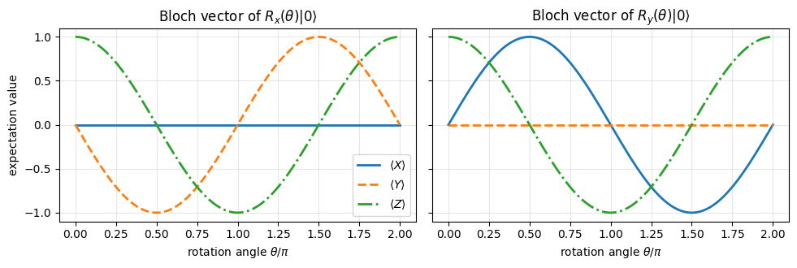
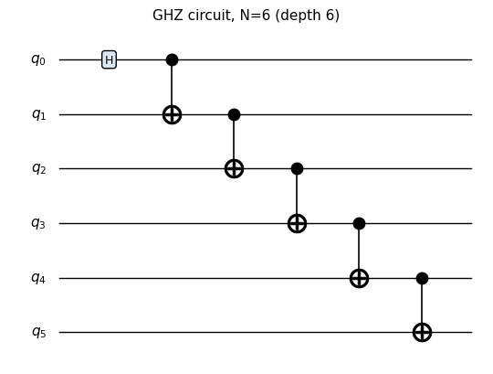
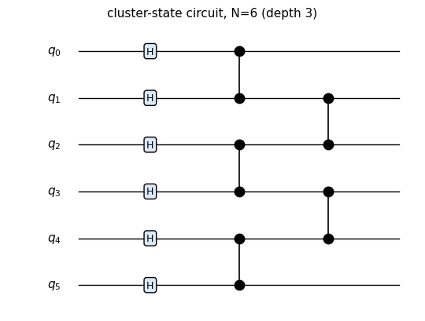
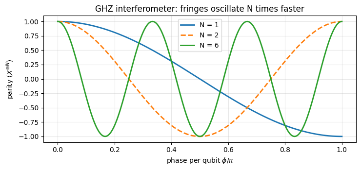
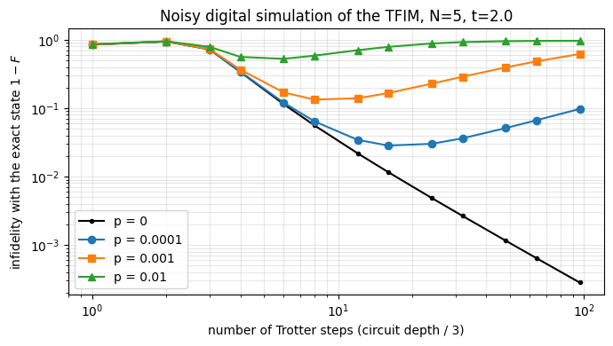

Quantum Many-Body Simulation — Chapter 4 — Digital quantum circuits
1. Introduction and motivation
In the previous notebooks we simulated spin chains: we stored the state of \(N\) spins-1/2 as a rank-\(N\) tensor, we learned to act on it with small matrices through one einsum (the function apply_gate of notebook 05), and we evolved it in time by chopping \(e^{-iHt}\) into a product of many small two-spin unitaries (Trotterization, notebook 04).
A product of many small unitaries acting on a register of two-level systems is, word for word, the definition of a quantum circuit. A quantum computer is a many-body spin system in which the experimentalist can switch the terms of the Hamiltonian on and off at will: a laser or microwave pulse on one atom/ion/superconducting island is a single-qubit gate, a controlled interaction between two of them, left on for a calibrated time, is a two-qubit gate. The “digital” language of gates and circuits used by the quantum-computing community and the “analog” language of Hamiltonians used in many-body physics describe the same mathematics.
This notebook makes the translation explicit, so that both literatures can be read side by side. Its first consequence is that we already own a quantum-circuit simulator: it is apply_gate plus a Python list.
Gates in many-body physics.
Digital quantum simulation: present-day quantum processors (superconducting qubits, trapped ions, Rydberg-atom arrays) simulate spin models by running Trotter circuits. To understand those experiments, and their errors, you need to be able to count gates and to model noise.
State preparation: GHZ states, cluster states, squeezed states, variational ansätze (Chapter 11) are all defined by the circuits that prepare them.
Numerics: thinking in gates is the natural way of organising fast simulation code. Every algorithm of this course - TEBD, quantum trajectories, classical shadows, variational eigensolvers - is “a loop over small einsums”.
Road map. Section 2 is a dictionary between spin and qubit language. Section 3 introduces the single-qubit gates and derives the rotation gates \(R_x, R_y, R_z\) as exponentials of Pauli matrices. Section 4 treats the two-qubit gates (CNOT, CZ, SWAP, controlled-\(U\), \(R_{xx}, R_{yy}, R_{zz}\)) and the three-qubit Toffoli/CCZ. In Section 5 a circuit becomes a Python list, we draw it, compute its depth and prepare Bell, GHZ and cluster states. Section 6 compiles whole circuits with jax.jit, sweeps parameters with vmap and folds deep circuits with lax.scan. Section 7 verifies the standard circuit identities numerically, Section 8 comments on universality (with a small numerical experiment), Section 9 rewrites a Trotter step of the transverse-field Ising model as a circuit and counts its gates, and Section 10 runs circuits with noise after each gate on the density tensor (notebook 07).
What you will learn
Physics
the gate set of digital quantum devices and its physical origin (pulses = rotations, interactions = entangling gates);
rotations of the Bloch sphere as exponentials of Pauli operators; global versus relative phases;
how entanglement is created by a circuit (Bell, GHZ, cluster states);
a Trotter step of a spin chain is a circuit; the trade-off between Trotter error and gate noise.
Numerical methods
closed forms of matrix exponentials from the property \(P^2=1\) and their validation against a generic expm;
the dense unitary of a circuit obtained from the matrix-free action on basis states (for validation only);
noisy circuits on the density tensor, cross-checked with quantum trajectories.
Implementation practice
a circuit as plain data: a list of (qubits, U); pure functions that build and run it;
jax.jit of a whole circuit (compile time versus run time), jax.vmap over gate angles, lax.scan over layers, lax.fori_loop with a traced number of steps;
comparing unitaries “up to a global phase” with a robust numerical criterion.
Every notebook of this course starts with the same cell. Choose where to run (DEVICE) and the floating-point precision (PRECISION): "double" = float64/complex128 (default, recommended for physics), "single" = float32/complex64 (half the memory, faster on consumer GPUs, but watch the round-off). All code below derives its dtypes from RDTYPE/CDTYPE and its check tolerances from TOL, so nothing else needs to change.
Code
# ==============================================================================# CONFIGURATION -- adapt to your hardware, then run the notebook top to bottom# ==============================================================================DEVICE ="auto"# "auto": use a GPU if JAX finds one, else CPU | "cpu" | "gpu"PRECISION ="double"# "double": float64/complex128 | "single": float32/complex64import osif DEVICE =="cpu": os.environ["JAX_PLATFORMS"] ="cpu"# must be set BEFORE jax is importedimport stringfrom functools import partialimport mathimport numpy as npimport jaximport jax.numpy as jnpfrom jax import lax# Precision is configurable: "double" = float64/complex128 (default; needed for long time evolutions and# tight validation), "single" = float32/complex64 (half the memory, faster on consumer GPUs).# In a notebook PRECISION is defined in the Configuration cell; for this module use the env var QE_PRECISION.PRECISION =globals().get("PRECISION", os.environ.get("QE_PRECISION", "double"))jax.config.update("jax_enable_x64", PRECISION =="double")RDTYPE = jnp.float64 if PRECISION =="double"else jnp.float32 # real dtypeCDTYPE = jnp.complex128 if PRECISION =="double"else jnp.complex64 # complex dtype of all states/operatorsTOL =1e-10if PRECISION =="double"else1e-4# tolerance for sanity checks (asserts)_LETTERS = string.ascii_letters # the 52 einsum index labels a-z, A-Zimport timeimport matplotlib.pyplot as pltif DEVICE =="gpu"and jax.default_backend() =="cpu":print("WARNING: DEVICE='gpu' requested but JAX found no GPU -- running on CPU.")print(f"JAX {jax.__version__} | backend: {jax.default_backend()} | devices: {jax.devices()}")print(f"precision: {PRECISION} -> real {RDTYPE.__name__}, complex {CDTYPE.__name__}, check tolerance TOL={TOL:g}")
JAX 0.11.0 | backend: cpu | devices: [CpuDevice(id=0)]
precision: double -> real float64, complex complex128, check tolerance TOL=1e-10
2. Spins are qubits: a dictionary
A qubit is any quantum two-level system used to carry information; mathematically it is a spin-1/2. The two communities use different words for the same objects:
many-body physics (notebooks 03-05)
quantum computing (this notebook)
spin-1/2 at site \(q\), states \(\lvert\uparrow\rangle,\lvert\downarrow\rangle\)
computational basis \(\lvert 010\rangle\) (a bit string)
Pauli matrices \(\sigma^x,\sigma^y,\sigma^z\)
gates \(X, Y, Z\)
local unitary \(e^{-i\tau h}\) generated by a one- or two-site term \(h\)
one- or two-qubit gate\(U\)
evolution for a short time under a sequence of terms
circuit: an ordered list of gates
number of Trotter steps
circuit depth
state tensor psi[s_0, ..., s_{N-1}]
the same tensor - “register of \(N\) qubits”
Conventions (unchanged throughout the course): qubit \(q\) is tensor axis \(q\), counted from 0; \(\lvert 0\rangle\) is the \(+1\) eigenstate of \(Z\) (“spin up”); the flat index of a basis state is the bit string read as a binary number with qubit 0 as the most significant bit, \(i = s_0 2^{N-1} + \dots + s_{N-1}\).
Recap of the one primitive we need. Applying a \(2\times2\) matrix \(U\) to qubit \(q\) of an \(N\)-qubit state is the contraction
\[ \psi'_{s_0 \dots a \dots s_{N-1}} = \sum_{b} U_{ab}\, \psi_{s_0 \dots b \dots s_{N-1}} , \]
and for a \(4\times4\) matrix on qubits \((q_1,q_2)\) we first reshape \(U \to U_{a_1 a_2 b_1 b_2}\) and contract two axes. For \(N=3\), \(q=1\) the einsum string is "Ab,abc->aAc". Cost: \(O(2^k 2^N)\) for a \(k\)-qubit gate, no \(2^N\times2^N\) matrix ever appears. All of this was derived in notebook 05; the cell below (folded on the website) recalls the production code of the primitives used in this notebook.
Engine recap — the simulator primitives used in this notebook (click to expand)
# ==============================================================================# ENGINE RECAP: the functions of quantum_engine.py (SmoQ.jax) used in this notebook.# Each one is derived, with its mathematics and an independent check, in notebook 08b# (Chapter 3), 'Building the quantum simulator engine'.# States are rank-N tensors of shape (2,)*N; every operator acts through ONE einsum.# ==============================================================================# ----------------------------------------------------------------------------# 1. Elementary matrices: Paulis, Clifford generators, rotations# ----------------------------------------------------------------------------I2 = jnp.eye(2, dtype=CDTYPE)X = jnp.array([[0, 1], [1, 0]], dtype=CDTYPE)Y = jnp.array([[0, -1j], [1j, 0]], dtype=CDTYPE)Z = jnp.array([[1, 0], [0, -1]], dtype=CDTYPE)H = jnp.array([[1, 1], [1, -1]], dtype=CDTYPE) / jnp.sqrt(2.0) # Hadamard: Z-basis <-> X-basisS = jnp.array([[1, 0], [0, 1j]], dtype=CDTYPE) # phase gate, S^2 = ZPAULI = {"I": I2, "X": X, "Y": Y, "Z": Z}CZ = jnp.diag(jnp.array([1, 1, 1, -1], dtype=CDTYPE))XX = jnp.kron(X, X)YY = jnp.kron(Y, Y)ZZ = jnp.kron(Z, Z)# ----------------------------------------------------------------------------# 2. THE core primitive: a k-qubit operator acting on a tensor through ONE einsum# ----------------------------------------------------------------------------def apply_gate(psi, U, qubits):"""Apply a k-qubit operator U to the axes `qubits` of the tensor `psi`. MATH ---- One qubit (k=1), target q: psi'[s_0,..,a,..,s_{N-1}] = sum_b U[a,b] psi[s_0,..,b,..,s_{N-1}] Two qubits (k=2), targets (q1,q2); the 4x4 matrix is reshaped to U[a1,a2,b1,b2]: psi'[.., a1, .., a2, ..] = sum_{b1,b2} U[a1,a2,b1,b2] psi[.., b1, .., b2, ..] This IS the action of (1 x .. x U x .. x 1) -- written without ever building it. EINSUM TRANSLATION (generated automatically below) ------------------ N=3, q=1 : "db,abc->adc" d = new (output) index of qubit 1 N=4, q=(1,3) : "efbd,abcd->aecf" e,f = new indices of qubits 1 and 3 Recipe: label the axes of psi with letters a,b,c,...; give every target qubit a NEW letter (the next unused ones); U carries (new letters)+(old letters of the targets); the output is psi's labels with the target letters replaced by the new ones. IMPLEMENTATION NOTES -------------------- * reshape of U: (2^k,2^k) -> (2,)*2k. Row index = (a1..ak), column = (b1..bk), and the FIRST qubit in `qubits` is the most significant bit of the small matrix, i.e. it corresponds to the LEFT factor of kron(A,B). * `qubits` may be any distinct axes in any order: non-neighbouring gates cost the same. * U need not be unitary: projectors, Kraus operators and Hamiltonian terms reuse this. * psi may be ANY tensor with those axes of size 2: a state (rank N), a density tensor (rank 2N: ket axes 0..N-1, bra axes N..2N-1), ... COST O(2^k * 2^N) operations, O(2^N) memory (dense matrix: O(4^N) both). JAX `qubits` must be static Python ints (they define the einsum string); psi and U are traced, so the function can sit inside jit / grad / vmap / scan. """ qubits =tuple(int(q) for q in qubits) k, n =len(qubits), psi.ndim U = jnp.asarray(U, dtype=psi.dtype).reshape((2,) * (2* k)) # matrix -> rank-2k tensor inp =list(_LETTERS[:n]) # labels of psi's axes new = _LETTERS[n:n + k] # fresh labels for the outputs out = inp.copy()for a, q inzip(new, qubits): out[q] = a # target axes get the new labels sub =f"{''.join(new)}{''.join(inp[q] for q in qubits)},{''.join(inp)}->{''.join(out)}"return jnp.einsum(sub, U, psi)def apply_gate_dm(rho, U, qubits):"""Unitary on a density tensor: rho -> U rho U^dagger. MATH rho'[a..;a'..] = sum_{b,b'} U[a,b] rho[b..;b'..] U^*[a',b'] i.e. U acts on the KET axis q and the complex conjugate U^* on the BRA axis N+q. (A density matrix is "a state vector of 2N qubits": vectorisation |rho>> and U (x) U^* acting on it.) IMPLEMENTATION two calls of `apply_gate` -- the same einsum machinery, no new code. COST O(2^k 4^N). """ N = rho.ndim //2 rho = apply_gate(rho, U, qubits) # U on ket axesreturn apply_gate(rho, jnp.conj(jnp.asarray(U)), [N + q for q in qubits]) # U^* on bra axesdef apply_kraus_dm(rho, kraus, qubits):"""Quantum channel in Kraus form: rho -> sum_m K_m rho K_m^dagger, sum_m K_m^dag K_m = 1. EINSUM TRANSLATION (N=2, channel on qubit 0; g = Kraus index, summed!) "gea,gfc,abcd->ebfd" with operands K, K^*, rho [a=ket0, b=ket1, c=bra0, d=bra1; e, f = new ket0, bra0] All Kraus branches are summed INSIDE one einsum -- no Python loop over m. `kraus` has shape (M, 2^k, 2^k). """ qubits =tuple(int(q) for q in qubits) k, N =len(qubits), rho.ndim //2 K = jnp.asarray(kraus, dtype=rho.dtype).reshape((-1,) + (2,) * (2* k)) n = rho.ndim inp =list(_LETTERS[:n]) new_k, new_b, m = _LETTERS[n:n + k], _LETTERS[n + k:n +2* k], _LETTERS[n +2* k] out = inp.copy()for a, b, q inzip(new_k, new_b, qubits): out[q], out[N + q] = a, b ket_old ="".join(inp[q] for q in qubits) bra_old ="".join(inp[N + q] for q in qubits) sub =f"{m}{new_k}{ket_old},{m}{new_b}{bra_old},{''.join(inp)}->{''.join(out)}"return jnp.einsum(sub, K, jnp.conj(K), rho)# ----------------------------------------------------------------------------# 3. State preparation# ----------------------------------------------------------------------------def zero_state(N):"""|00...0>: a rank-N tensor of zeros with a single 1 at index (0,0,...,0). JAX arrays are immutable: `.at[idx].set(v)` returns an updated COPY (functional style)."""return jnp.zeros((2,) * N, dtype=CDTYPE).at[(0,) * N].set(1.0)_KETS = {"0": [1, 0], "1": [0, 1], "+": [1, 1], "-": [1, -1], "r": [1, 1j], "l": [1, -1j]}def product_state(spec):"""Product state from a string, one character per qubit: product_state('01+-') = |0>|1>|+>|->. ('r','l' = the +1/-1 eigenstates of Y.) MATH psi[s_0,...,s_{N-1}] = v0[s_0] v1[s_1] ... v_{N-1}[s_{N-1}] EINSUM an outer product = einsum with NO summed index: "a,b,c->abc". A product state needs only 2N numbers; entanglement is what makes all 2^N necessary. """ vecs = [jnp.array(_KETS[c], dtype=CDTYPE) / jnp.linalg.norm(jnp.array(_KETS[c], dtype=CDTYPE))for c in spec] n =len(vecs) sub =",".join(_LETTERS[i] for i inrange(n)) +"->"+ _LETTERS[:n]return jnp.einsum(sub, *vecs)def basis_state(bits):"""Computational basis state |b_0 b_1 ... b_{N-1}> from a list of bits.""" bits =tuple(int(b) for b in bits)return jnp.zeros((2,) *len(bits), dtype=CDTYPE).at[bits].set(1.0)def ghz_state(N):"""GHZ state (|0...0> + |1...1>)/sqrt(2): two non-zero entries of the rank-N tensor.""" psi = jnp.zeros((2,) * N, dtype=CDTYPE)return psi.at[(0,) * N].set(1/ jnp.sqrt(2.0)).at[(1,) * N].set(1/ jnp.sqrt(2.0))def cluster_state(N, periodic=False):"""1D cluster (graph) state: |+>^N followed by CZ on every bond. Stabilisers K_i = Z_{i-1} X_i Z_{i+1}.""" psi = product_state("+"* N)for q inrange(N -1): psi = apply_gate(psi, CZ, [q, q +1])if periodic and N >2: psi = apply_gate(psi, CZ, [N -1, 0])return psidef bell_state(kind="phi+"):"""The four Bell states as (2,2) tensors: phi+- = (|00> +- |11>)/sqrt2, psi+- = (|01> +- |10>)/sqrt2.""" a =1/ np.sqrt(2) v = {"phi+": [a, 0, 0, a], "phi-": [a, 0, 0, -a], "psi+": [0, a, a, 0], "psi-": [0, a, -a, 0]}[kind]return jnp.array(v, dtype=CDTYPE).reshape(2, 2)def to_dm(psi):"""Pure state -> density TENSOR rho[s..; s'..] = psi[s..] psi^*[s'..] (rank 2N). An outer product: einsum "ab,AB->abAB" -- here via the equivalent tensordot(axes=0)."""return jnp.tensordot(psi, jnp.conj(psi), axes=0)def dm_matrix(rho):"""View a rank-2N density tensor as an ordinary 2^N x 2^N matrix (a reshape, no copy of meaning).""" d =int(round(np.sqrt(rho.size)))return rho.reshape(d, d)# ----------------------------------------------------------------------------# 4. Reduced density matrices & observables (matrix-free)# ----------------------------------------------------------------------------def rdm(psi, keep):"""Reduced density matrix of the qubits `keep` from a PURE state: rho_A = Tr_B |psi><psi|. MATH rho_A[a, a'] = sum_{b} psi[a, b] psi^*[a', b] (a: indices of A, b: of the rest B) EINSUM TRANSLATION N=3, keep=(0,): "abc,Abc->aA" with operands psi, psi^* * letters of B (b,c) appear in BOTH operands and not in the output -> summed = traced out * the kept axis gets a different letter in the second operand -> stays open (a and A) The full |psi><psi| (4^N numbers) is never formed; cost O(2^N 2^|A|). Returns a (2^|A|, 2^|A|) matrix with row/column order following `keep`. """ keep =tuple(int(q) for q in keep) n, k = psi.ndim, len(keep) a =list(_LETTERS[:n]) b = a.copy()for new, q inzip(_LETTERS[n:n + k], keep): b[q] = new sub =f"{''.join(a)},{''.join(b)}->{''.join(a[q] for q in keep)}{''.join(b[q] for q in keep)}"return jnp.einsum(sub, psi, jnp.conj(psi)).reshape(2** k, 2** k)def apply_pauli_string(psi, ops):"""Apply a Pauli string P = P_0 x P_1 x ... to psi. `ops` is a dict {qubit: 'X'|'Y'|'Z'} or a string like 'XIZY' (one letter per qubit; 'I' skipped). N single-qubit einsums -- cost O(N 2^N) -- instead of one 2^N x 2^N matrix."""ifisinstance(ops, str): ops = {q: p for q, p inenumerate(ops) if p !="I"}for q, p in ops.items(): psi = apply_gate(psi, PAULI[p], [q])return psidef expect_pauli_string(psi, ops):"""<psi|P|psi> = <psi | (P psi)> : apply the string, then ONE inner product (jnp.vdot conjugates its first argument). Works for strings of any weight, e.g. the N-body correlator <X X ... X>."""return jnp.real(jnp.vdot(psi, apply_pauli_string(psi, ops)))def all_local_expectations(psi):"""Bloch vectors of all qubits: array (N,3) with rows (<X_q>, <Y_q>, <Z_q>), from the 1-qubit RDMs.""" out = []for q inrange(psi.ndim): r = rdm(psi, [q]) out.append(jnp.stack([jnp.real(jnp.trace(r @ P)) for P in (X, Y, Z)]))return jnp.stack(out)# ----------------------------------------------------------------------------# 5. State characteristics: entropies, fidelity, negativity# ----------------------------------------------------------------------------def schmidt_values(psi, subsystem):"""Schmidt coefficients of the bipartition A|B with A = `subsystem`. MATH Group the tensor axes into a matrix M[(a),(b)] = psi[a,b] of shape (2^|A|, 2^|B|). Its SVD M = U diag(lambda) V^dag IS the Schmidt decomposition |psi> = sum_k lambda_k |u_k>_A |v_k>_B , rho_A has eigenvalues lambda_k^2. IMPLEMENTATION transpose (A axes first) -> reshape -> svd. No density matrix needed. """ A =tuple(int(q) for q in subsystem) B =tuple(q for q inrange(psi.ndim) if q notin A) M = jnp.transpose(psi, A + B).reshape(2**len(A), -1)return jnp.linalg.svd(M, compute_uv=False)def entanglement_entropy(psi, subsystem, base=2.0):"""Entanglement entropy S_A = -sum_k p_k log p_k with p_k = lambda_k^2 (squared Schmidt values). Product state: 0. Bell/GHZ across any cut: 1 bit. Random state: ~ |A| - 1/(2 ln2) 2^{|A|-|B|} (Page).""" p = jnp.clip(schmidt_values(psi, subsystem) **2, 1e-16, None)return-jnp.sum(p * jnp.log(p)) / jnp.log(base)def fidelity_pure(psi, phi):"""F = |<psi|phi>|^2 between two pure states."""return jnp.abs(jnp.vdot(psi, phi)) **2# ----------------------------------------------------------------------------# 7. Noise channels (Kraus operators): density matrix and quantum-trajectory forms# ----------------------------------------------------------------------------def kraus_depolarizing(p):"""Depolarising channel rho -> (1-p) rho + (p/3)(X rho X + Y rho Y + Z rho Z). Kraus: sqrt(1-p) 1, sqrt(p/3) X, sqrt(p/3) Y, sqrt(p/3) Z. Bloch vector shrinks by 1 - 4p/3."""return jnp.stack([jnp.sqrt(1- p) * I2, jnp.sqrt(p /3) * X, jnp.sqrt(p /3) * Y, jnp.sqrt(p /3) * Z])def apply_kraus_mcwf(key, psi, kraus, qubits):"""Apply a channel to a PURE state stochastically (quantum trajectory / Monte-Carlo wave function). MATH choose branch m with probability p_m = ||K_m psi||^2 = Tr(K_m rho_A K_m^dag) then |psi> -> K_m|psi> / sqrt(p_m). Averaging |psi><psi| over many trajectories gives exactly sum_m K_m rho K_m^dag. WHY memory O(2^N) instead of O(4^N): open systems at the price of closed ones (times #trajectories, which are embarrassingly parallel -> jax.vmap over keys). IMPLEMENTATION probabilities come from the SMALL reduced density matrix (einsum "mab,bc,mac->m"); `K[m]` with a traced integer m is a gather, so everything stays jit-compatible. """ K = jnp.asarray(kraus, dtype=CDTYPE) r = rdm(psi, qubits) probs = jnp.real(jnp.einsum("mab,bc,mac->m", K, r, jnp.conj(K))) m = jax.random.categorical(key, jnp.log(jnp.clip(probs, 1e-300, None))) psi = apply_gate(psi, K[m], qubits)return psi / jnp.linalg.norm(psi)# ----------------------------------------------------------------------------# 8. Hamiltonians as lists of local terms; H|psi> matrix-free# ----------------------------------------------------------------------------def heisenberg_terms(N, Jxx=1.0, Jyy=1.0, Jzz=1.0, hx=0.0, hy=0.0, hz=0.0, periodic=False, bonds=None):"""Spin-1/2 Hamiltonian in Pauli convention H = sum_<ij> (Jxx X_i X_j + Jyy Y_i Y_j + Jzz Z_i Z_j) + sum_i (hx X_i + hy Y_i + hz Z_i) returned as a LIST of local terms [(qubits, small_matrix), ...] -- this list *is* our Hamiltonian. Heisenberg: Jxx=Jyy=Jzz XXZ: Jxx=Jyy!=Jzz XY: Jzz=0 TFIM: only Jzz and hx. `bonds` overrides the default open chain (any graph: ladders, 2D lattices, all-to-all, ...)."""if bonds isNone: bonds = [(i, i +1) for i inrange(N -1)] + ([(N -1, 0)] if periodic and N >2else []) terms = [((i, j), Jxx * XX + Jyy * YY + Jzz * ZZ) for (i, j) in bonds]if hx !=0or hy !=0or hz !=0: terms += [((i,), hx * X + hy * Y + hz * Z) for i inrange(N)]return termsdef apply_hamiltonian(terms, psi):"""H|psi> = sum_k h_k|psi>, every term applied with `apply_gate` (h_k is Hermitian, not unitary -- the einsum does not care). Cost O(#terms * 2^N). This matrix-vector product is ALL that Lanczos, Chebyshev and Krylov methods need, which is why they scale to N ~ 25-30.""" out = jnp.zeros_like(psi)for qubits, h in terms: out = out + apply_gate(psi, h, qubits)return outdef dense_hamiltonian(terms, N):"""Dense 2^N x 2^N matrix for VALIDATION on small N -- built from the matrix-free action: column j of H is H|e_j>. `jax.vmap` applies H to all basis vectors at once.""" eye = jnp.eye(2** N, dtype=CDTYPE).reshape((2** N,) + (2,) * N) cols = jax.vmap(lambda e: apply_hamiltonian(terms, e).reshape(-1))(eye)return cols.T# ----------------------------------------------------------------------------# 9. Time evolution: TEBD / Trotter-Suzuki, Chebyshev, Krylov, exact# ----------------------------------------------------------------------------def _expm_herm(h, tau):"""exp(-i tau h) for a SMALL Hermitian matrix: h = V w V^dag => V exp(-i tau w) V^dag.""" w, v = jnp.linalg.eigh(jnp.asarray(h, dtype=CDTYPE))return (v * jnp.exp(-1j* tau * w)) @ v.conj().Tdef tebd_gates(terms, dt, order=2):"""Gate sequence of ONE Trotter-Suzuki (TEBD) step for H = sum_k h_k. MATH exp(-i H dt) cannot be split exactly because [h_k, h_l] != 0, but (BCH formula): order 1: prod_k e^{-i h_k dt} local error O(dt^2), global O(dt) order 2: prod_k e^{-i h_k dt/2} * prod_k(reversed) e^{-i h_k dt/2} local O(dt^3), global O(dt^2) order 4: S2(s dt)^2 S2((1-4s) dt) S2(s dt)^2, s = 1/(4 - 4^{1/3}) (Suzuki) global O(dt^4) Each factor is a 2x2 or 4x4 unitary -> applied by einsum; this is TEBD on a full state vector. Every order is exactly unitary: the norm is conserved to machine precision; the ERROR is in the phase /direction of the state, and it is controlled by dt. """if order ==1:return [(q, _expm_herm(h, dt)) for q, h in terms]if order ==2: half = [(q, _expm_herm(h, dt /2)) for q, h in terms]return half + half[::-1]if order ==4: s =1.0/ (4.0-4.0** (1.0/3.0)) seq = []for w in (s, s, 1-4* s, s, s): seq += tebd_gates(terms, w * dt, order=2)return seqraiseValueError("order must be 1, 2 or 4")def exact_evolve(psi, terms, t):"""Dense reference for small N: full diagonalisation H = V w V^dag, |psi(t)> = V e^{-i w t} V^dag |psi>. O(8^N) time, O(4^N) memory -- the wall that matrix-free methods avoid; used only to validate them.""" N = psi.ndim w, v = jnp.linalg.eigh(dense_hamiltonian(terms, N))return ((v * jnp.exp(-1j* t * w)) @ (v.conj().T @ psi.reshape(-1))).reshape((2,) * N)# ----------------------------------------------------------------------------# 12. Random unitaries, Clifford group, brick-wall circuits# ----------------------------------------------------------------------------def single_qubit_cliffords():"""The 24 single-qubit Clifford gates (modulo global phase), generated by closing {H, S} under multiplication (breadth-first search; a canonical phase makes matrices comparable).""" found = [np.eye(2, dtype=complex)] gens = [np.asarray(H), np.asarray(S)]def canon(U): i = np.flatnonzero(np.abs(U.reshape(-1)) >1e-9)[0]return U * np.exp(-1j* np.angle(U.reshape(-1)[i])) frontier = [found[0]]while frontier: nxt = []for U in frontier:for g in gens: V = canon(g @ U)ifnotany(np.allclose(V, W) for W in found): found.append(V) nxt.append(V) frontier = nxtreturn jnp.asarray(np.stack(found), dtype=CDTYPE)
3. Single-qubit gates
3.1 The fixed gates: Paulis, Hadamard, \(S\) and \(T\)
A single-qubit gate is a \(2\times 2\) unitary matrix, \(U^\dagger U = 1\). The ones with a name are
gate
matrix
what it does
\(X\)
\(\begin{pmatrix}0&1\\1&0\end{pmatrix}\)
bit flip \(\lvert0\rangle\leftrightarrow\lvert1\rangle\) (NOT gate; a \(\pi\) rotation about \(x\))
with \(\lvert\pm\rangle = (\lvert0\rangle\pm\lvert1\rangle)/\sqrt2\) the eigenstates of \(X\). These matrices are constants of our engine; here they are, verbatim. Beware of the names: in this notebook H is the Hadamard gate (not a Hamiltonian), S and T are gates (not an entropy and a time), so we must avoid these letters for other variables.
Checkpoint. Before using any gate we test the properties claimed in the table: unitarity, \(H^2=1\), \(S^2=Z\), \(T^2=S\), and the action of \(H\) on the basis states. TOL is the tolerance defined in the configuration cell (\(10^{-10}\) in double precision).
Code
# ==============================================================================# CHECKPOINT: elementary properties of the fixed single-qubit gates# ==============================================================================named_1q = {"I": I2, "X": X, "Y": Y, "Z": Z, "H": H, "S": S, "T": T}for name, U in named_1q.items(): err =float(jnp.max(jnp.abs(U.conj().T @ U - I2))) # || U^dag U - 1 ||_maxassert err < TOL, nameprint("all seven gates are unitary")checks = {"H H = 1": (H @ H, I2), "S S = Z": (S @ S, Z), "T T = S": (T @ T, S),"X Y = i Z": (X @ Y, 1j* Z), "S^dag S = 1": (SDG @ S, I2)}for text, (lhs, rhs) in checks.items(): err =float(jnp.max(jnp.abs(lhs - rhs)))print(f"{text:12s} max error = {err:.1e}")assert err < TOLket0 = jnp.array([1, 0], dtype=CDTYPE)print("H|0> =", np.round(np.asarray(H @ ket0), 4), " = |+>")
all seven gates are unitary
H H = 1 max error = 2.2e-16
S S = Z max error = 0.0e+00
T T = S max error = 2.2e-16
X Y = i Z max error = 0.0e+00
S^dag S = 1 max error = 0.0e+00
H|0> = [0.7071+0.j 0.7071+0.j] = |+>
All identities hold to machine precision, and \(H\lvert0\rangle\) has two equal amplitudes \(1/\sqrt2 \approx 0.7071\): the Hadamard gate creates the equal superposition \(\lvert+\rangle\).
3.2 Rotations as exponentials of Pauli matrices
The fixed gates above are special cases of a continuous family. Physically, a gate is implemented by switching on a Hamiltonian for some time: a resonant driving field along \(x\) with Rabi frequency \(\Omega\) is described (in the rotating frame, \(\hbar=1\)) by \(H_{\rm drive} = \frac{\Omega}{2} X\), and after a time \(t\) the qubit has evolved by
A matrix exponential is defined by its power series, \(e^{A} = \sum_{k=0}^\infty A^k/k!\). In general one needs a numerical algorithm to evaluate it, but for Pauli matrices there is a closed form. Let \(P\) be any matrix with \(P^2 = 1\) (true for \(X\), \(Y\), \(Z\) and, as we will need later, for \(X\otimes X\) etc.). Then \(P^{2m}=1\) and \(P^{2m+1}=P\), so the series splits into even and odd powers:
More generally, for a unit vector \(\mathbf n\) the matrix \(\mathbf n\cdot\boldsymbol\sigma = n_xX+n_yY+n_zZ\) also squares to one (because different Pauli matrices anticommute and \(|\mathbf n|=1\)), hence \(R_{\mathbf n}(\theta) = e^{-i\theta\,\mathbf n\cdot\boldsymbol\sigma/2} = \cos\frac\theta2 - i\sin\frac\theta2\,\mathbf n\cdot\boldsymbol\sigma\).
From formula to code. We implement Eq. (2) literally (pauli_rotation) and compare it with two independent evaluations of the exponential: (i) the truncated power series, to watch it converge, and (ii) the general-purpose jax.scipy.linalg.expm.
Code
# ==============================================================================# STEP 1: exp(-i theta P / 2) three ways: closed form, power series, generic expm# ==============================================================================from jax.scipy.linalg import expmdef pauli_rotation(theta, P):"""Rotation generated by an involutory matrix P (P @ P = 1). MATH exp(-i theta P / 2) = cos(theta/2) 1 - i sin(theta/2) P [Eq. (2) with a = theta/2] Works for P = X, Y, Z, n.sigma, and for two-qubit Pauli products like X(x)X. """ d = P.shape[0]return jnp.cos(theta /2) * jnp.eye(d, dtype=CDTYPE) -1j* jnp.sin(theta /2) * Pdef exp_series(A, K):"""Truncated power series sum_{k<K} A^k / k! (for demonstration only: slow and inaccurate for large ||A||).""" term = jnp.eye(A.shape[0], dtype=CDTYPE) total = termfor k inrange(1, K): term = term @ A / k # A^k/k! from A^(k-1)/(k-1)! total = total + termreturn totaltheta =1.234for name, P in (("X", X), ("Y", Y), ("Z", Z)): closed = pauli_rotation(theta, P) generic = expm(-0.5j* theta * P) err =float(jnp.max(jnp.abs(closed - generic)))print(f"R_{name.lower()}({theta}): |closed form - expm|_max = {err:.1e}")assert err < TOLprint("\nconvergence of the power series for R_y(1.234):")for K in (2, 4, 6, 8, 12, 16): err =float(jnp.max(jnp.abs(exp_series(-0.5j* theta * Y, K) - pauli_rotation(theta, Y))))print(f" {K:2d} terms: error = {err:.1e}")
R_x(1.234): |closed form - expm|_max = 1.1e-16
R_y(1.234): |closed form - expm|_max = 1.1e-16
R_z(1.234): |closed form - expm|_max = 0.0e+00
convergence of the power series for R_y(1.234):
2 terms: error = 1.8e-01
4 terms: error = 6.0e-03
6 terms: error = 7.6e-05
8 terms: error = 5.2e-07
12 terms: error = 6.3e-12
16 terms: error = 0.0e+00
The closed form agrees with the generic matrix exponential to machine precision, and the power series converges factorially fast to the same matrix (about 16 terms are needed for \(\theta\approx1.2\) in double precision). The closed form is preferable: it is exact, costs two trigonometric functions, and is differentiable with respect to \(\theta\) - which is what variational algorithms (notebook 40, Chapter 11) need.
The engine versions of the three rotations are the matrices of Eq. (3) written out explicitly. theta may be a traced JAX scalar, so these functions can live inside jit, vmap and grad.
Code
# ==============================================================================# Functions of quantum_engine.py derived in this notebook# ==============================================================================# ----------------------------------------------------------------------------# 1. Elementary matrices: Paulis, Clifford generators, rotations# ----------------------------------------------------------------------------def rx(theta):"""Rotation about x: Rx(theta) = exp(-i theta X/2) = cos(theta/2) 1 - i sin(theta/2) X. Derivation: for any operator with P^2 = 1 the exponential series splits into even/odd parts, exp(-i a P) = cos(a) 1 - i sin(a) P. Here a = theta/2. `theta` may be a traced JAX scalar, so the gate is differentiable (jax.grad) and jit-able. """ c, s = jnp.cos(theta /2), jnp.sin(theta /2)return jnp.array([[c, -1j* s], [-1j* s, c]], dtype=CDTYPE)def ry(theta):"""Rotation about y: Ry(theta) = exp(-i theta Y/2) = [[cos, -sin], [sin, cos]](theta/2) (real matrix).""" c, s = jnp.cos(theta /2), jnp.sin(theta /2)return jnp.array([[c, -s], [s, c]], dtype=CDTYPE)def rz(theta):"""Rotation about z: Rz(theta) = exp(-i theta Z/2) = diag(e^{-i theta/2}, e^{+i theta/2}).""" e = jnp.exp(-0.5j* theta)return jnp.array([[e, 0], [0, jnp.conj(e)]], dtype=CDTYPE)
3.3 Checkpoint on the Bloch sphere
The name “rotation” refers to the Bloch sphere. Every pure qubit state can be written as \(\lvert\psi\rangle = \cos\frac\vartheta2\lvert0\rangle + e^{i\varphi}\sin\frac\vartheta2\lvert1\rangle\) and is represented by the Bloch vector\(\mathbf r = (\langle X\rangle,\langle Y\rangle,\langle Z\rangle) = (\sin\vartheta\cos\varphi,\ \sin\vartheta\sin\varphi,\ \cos\vartheta)\) (notebook 03). Apply \(R_z(\theta)\) from Eq. (3):
The overall factor \(e^{-i\theta/2}\) is a global phase without any observable consequence; what remains is \(\varphi\to\varphi+\theta\): the Bloch vector has been rotated by the angle \(\theta\) about the \(z\) axis (counter-clockwise when seen from the tip of the axis). The same holds for any axis: \(R_{\mathbf n}(\theta)\) rotates the Bloch vector by \(\theta\) about \(\mathbf n\). (We quote this general statement without proof; it follows from the identity \(R^\dagger (\mathbf r\cdot\boldsymbol\sigma) R = (\mathcal R^{-1}\mathbf r)\cdot\boldsymbol\sigma\), see Nielsen & Chuang, Sec. 4.2.)
Prediction to test: starting from \(\lvert0\rangle\), i.e. \(\mathbf r=(0,0,1)\), a rotation about \(x\) by \(\theta\) must give \(\mathbf r(\theta) = (0, -\sin\theta, \cos\theta)\), and a rotation about \(y\) gives \((\sin\theta, 0, \cos\theta)\).
From formula to code. One function maps an angle to a Bloch vector: build \(\lvert0\rangle\), apply the gate with apply_gate, read out \((\langle X\rangle,\langle Y\rangle,\langle Z\rangle)\) from the one-qubit reduced density matrix (all_local_expectations). jax.vmap turns this function of one angle into a function of a whole array of angles without a Python loop (notebook 01), and jax.jit compiles the batched function.
Code
# ==============================================================================# STEP 2: Bloch vector of R_x(theta)|0> and R_y(theta)|0> for 200 angles at once (vmap)# ==============================================================================def bloch_after(gate_fn, theta):"""Bloch vector (<X>,<Y>,<Z>) of gate_fn(theta)|0>.""" psi = apply_gate(zero_state(1), gate_fn(theta), [0])return all_local_expectations(psi)[0]thetas = jnp.linspace(0.0, 2* jnp.pi, 200)bloch_x = jax.jit(jax.vmap(lambda th: bloch_after(rx, th)))(thetas) # shape (200, 3)bloch_y = jax.jit(jax.vmap(lambda th: bloch_after(ry, th)))(thetas)# CHECKPOINT against the analytic rotation of the Bloch vectorzeros = jnp.zeros_like(thetas)err_x =float(jnp.max(jnp.abs(bloch_x - jnp.stack([zeros, -jnp.sin(thetas), jnp.cos(thetas)], axis=1))))err_y =float(jnp.max(jnp.abs(bloch_y - jnp.stack([jnp.sin(thetas), zeros, jnp.cos(thetas)], axis=1))))print(f"max deviation from (0,-sin,cos) for R_x: {err_x:.1e}")print(f"max deviation from (sin,0,cos) for R_y: {err_y:.1e}")assertmax(err_x, err_y) <10* TOLfig, axes = plt.subplots(1, 2, figsize=(10, 3.4), sharey=True)for ax, data, name inzip(axes, (bloch_x, bloch_y), ("R_x", "R_y")):for k, (lab, ls) inenumerate(zip((r"$\langle X\rangle$", r"$\langle Y\rangle$", r"$\langle Z\rangle$"), ("-", "--", "-."))): ax.plot(thetas / jnp.pi, data[:, k], ls, lw=2, label=lab) ax.set_xlabel(r"rotation angle $\theta/\pi$") ax.set_title(rf"Bloch vector of ${name}(\theta)|0\rangle$") ax.grid(alpha=0.3)axes[0].set_ylabel("expectation value")axes[0].legend()plt.tight_layout()plt.show()
max deviation from (0,-sin,cos) for R_x: 2.2e-16
max deviation from (sin,0,cos) for R_y: 2.2e-16

The numerical Bloch vectors follow the predicted great circles: \(R_x\) moves the vector in the \(y\)-\(z\) plane (\(\langle Y\rangle=-\sin\theta\)), \(R_y\) in the \(x\)-\(z\) plane. At \(\theta=\pi\) the spin is flipped (\(\langle Z\rangle=-1\)): a “\(\pi\) pulse” is an \(X\) gate. At \(\theta=\pi/2\) the state lies on the equator: a “\(\pi/2\) pulse” creates an equal superposition, like the Hadamard gate. These are exactly the Rabi oscillations you integrated in the mini-project of notebook 01, now obtained from a closed-form gate.
Physics insight.\(\langle Z\rangle\) returns to \(+1\) at \(\theta = 2\pi\), but the state does not: \(R_{\mathbf n}(2\pi) = -1\). A spin-1/2 needs a \(4\pi\) rotation to come back to itself. For a single isolated qubit this sign is an unobservable global phase; it becomes observable as soon as the rotation is controlled by another qubit (Section 4.2).
3.4 Global phases and the Euler (Z-Y-Z) decomposition
Two unitaries that differ by a phase factor, \(V = e^{i\alpha}U\), give the same expectation values for every state, because \(\langle\psi\rvert V^\dagger O V\lvert\psi\rangle = \langle\psi\rvert U^\dagger O U\lvert\psi\rangle\). As gates they are physically equivalent. For instance, from Eq. (3), \(R_z(\pi) = \mathrm{diag}(-i, i) = -iZ\) and \(R_z(\pi/2) = e^{-i\pi/4} S\), \(R_z(\pi/4) = e^{-i\pi/8}T\) (hence the historical name “\(\pi/8\) gate”).
To compare gates numerically we therefore need a distance that ignores the global phase. A convenient one is based on the normalised overlap of the two matrices, \(\lvert\mathrm{Tr}(U^\dagger V)\rvert/d\), which equals 1 if and only if \(V=e^{i\alpha}U\) (Cauchy-Schwarz inequality for the inner product \(\mathrm{Tr}(U^\dagger V)\) of two matrices of norm \(\sqrt d\)):
Every single-qubit gate is a rotation (up to a phase). A \(2\times2\) unitary has 4 real parameters. One of them is the global phase; the remaining three can be chosen as Euler angles:
\[ U = e^{i\alpha} R_z(\beta) R_y(\gamma) R_z(\delta). \tag{5}\]
which has determinant 1. So we can read the angles off a given \(U\): \(\det U = e^{2i\alpha}\) fixes \(\alpha\); with \(V = e^{-i\alpha}U\) we get \(\gamma = 2\arctan(|V_{10}|/|V_{00}|)\), \(\beta+\delta = 2\arg V_{11}\) and \(\beta-\delta = 2\arg V_{10}\).
Two remarks on the domain of the angles. First, \(\arctan\) of a ratio of two non-negative numbers lies in \([0,\pi/2]\), so this recipe returns \(\gamma\in[0,\pi]\); that is exactly the range in which \(\cos\frac\gamma2\ge0\) and \(\sin\frac\gamma2\ge0\), which is what makes the two \(\arg\) formulas consistent with the matrix above. Second, the decomposition is not unique at the two ends of that range. If \(\gamma=0\) then \(V_{10}=0\) and only the combination \(\beta+\delta\) is determined (the matrix is \(R_z(\beta+\delta)\), and any split into \(\beta\) and \(\delta\) works); if \(\gamma=\pi\) then \(V_{00}=V_{11}=0\) and only \(\beta-\delta\) is determined. The code below resolves both cases by the convention \(\arg 0 = 0\), which picks one valid split out of the family.
On hardware this matters: a device that can perform rotations about two axes can perform any single-qubit gate with at most three pulses.
Code
# ==============================================================================# STEP 3: phase-insensitive gate comparison and the Z-Y-Z decomposition# ==============================================================================def gate_distance(U, V):"""Delta(U,V) = 1 - |Tr(U^dag V)| / d -- zero iff V = e^{i alpha} U [Eq. (4)].""" d = U.shape[0]returnfloat(1.0- jnp.abs(jnp.trace(U.conj().T @ V)) / d)def zyz_angles(U):"""Euler angles of a 2x2 unitary: U = e^{i alpha} Rz(beta) Ry(gamma) Rz(delta) [Eq. (5)]. MATH alpha = arg(det U)/2, V = e^{-i alpha} U (det V = 1), gamma = 2 atan2(|V10|, |V00|), beta + delta = 2 arg V11, beta - delta = 2 arg V10. DOMAIN gamma in [0, pi] (both arguments of atan2 are >= 0), alpha in (-pi/2, pi/2]. Degenerate cases: gamma = 0 fixes only beta + delta, gamma = pi only beta - delta; the convention arg(0) = 0 of jnp.angle picks one valid split. """ alpha = jnp.angle(jnp.linalg.det(U)) /2 V = jnp.exp(-1j* alpha) * U gamma =2* jnp.arctan2(jnp.abs(V[1, 0]), jnp.abs(V[0, 0])) plus, minus =2* jnp.angle(V[1, 1]), 2* jnp.angle(V[1, 0])return alpha, (plus + minus) /2, gamma, (plus - minus) /2print("phase-insensitive comparisons Delta(U,V):")for text, U, V in (("Rz(pi) vs Z", rz(jnp.pi), Z), ("Rz(pi/2) vs S", rz(jnp.pi /2), S), ("Rz(pi/4) vs T", rz(jnp.pi /4), T), ("Rx(pi) vs X", rx(jnp.pi), X), ("Ry(pi) vs Y", ry(jnp.pi), Y), ("Rx(pi) vs Z (different gates)", rx(jnp.pi), Z)):print(f" {text:32s}{gate_distance(U, V):.2e}")assert (gate_distance(U, V) >0.5) if"different"in text else (gate_distance(U, V) < TOL)print("\nZ-Y-Z decomposition, U -> (alpha, beta, gamma, delta), and reconstruction error:")for name, U in (("H", H), ("S", S), ("T", T), ("X", X), ("Rx(0.7)", rx(0.7))): al, be, ga, de = zyz_angles(U) rebuilt = jnp.exp(1j* al) * rz(be) @ ry(ga) @ rz(de) err =float(jnp.max(jnp.abs(rebuilt - U)))print(f" {name:8s} angles/pi = ({float(al)/np.pi:+.3f}, {float(be)/np.pi:+.3f}, {float(ga)/np.pi:+.3f}, "f"{float(de)/np.pi:+.3f}) |rebuilt - U|_max = {err:.1e}")assert err <100* TOL# the decomposition is not a lucky accident of these five gates: test it on 2000 random unitaries# U = exp(i A) with A a random Hermitian 2x2 matrix (a generic, non-circular source of unitaries)def random_unitary_2x2(key):"""exp(i A) with A = (B + B^dag)/2 Hermitian and B complex Gaussian.""" k1, k2 = jax.random.split(key) B = jax.random.normal(k1, (2, 2)) +1j* jax.random.normal(k2, (2, 2))return expm(1j* (B + B.conj().T) /2)def zyz_roundtrip_error(key): U = random_unitary_2x2(key) al, be, ga, de = zyz_angles(U)return jnp.max(jnp.abs(jnp.exp(1j* al) * rz(be) @ ry(ga) @ rz(de) - U))errs = jax.jit(jax.vmap(zyz_roundtrip_error))(jax.random.split(jax.random.PRNGKey(3), 2000))print(f"\nZ-Y-Z round trip on 2000 random unitaries: worst |rebuilt - U|_max = {float(jnp.max(errs)):.1e}")assertfloat(jnp.max(errs)) <100* TOL
phase-insensitive comparisons Delta(U,V):
Rz(pi) vs Z 0.00e+00
Rz(pi/2) vs S 0.00e+00
Rz(pi/4) vs T 0.00e+00
Rx(pi) vs X 0.00e+00
Ry(pi) vs Y 0.00e+00
Rx(pi) vs Z (different gates) 1.00e+00
Z-Y-Z decomposition, U -> (alpha, beta, gamma, delta), and reconstruction error:
Z-Y-Z round trip on 2000 random unitaries: worst |rebuilt - U|_max = 6.0e-16
The first block confirms that \(Z,S,T,X,Y\) are rotations by \(\pi,\pi/2,\pi/4,\pi,\pi\) up to a global phase (\(\Delta\approx10^{-16}\)), while \(R_x(\pi)\) and \(Z\) are genuinely different gates (\(\Delta=1\): their overlap vanishes). The second block reconstructs each gate from its Euler angles exactly, including the phase \(\alpha\). The reconstruction is exact for every \(U\), not only for these five. \(\det U = e^{2i\alpha}\) fixes \(\alpha\) only modulo \(\pi\), but the other choice \(\alpha+\pi\) flips the sign of \(V\), shifts both \(\arg\) values by \(\pi\) and hence \(\beta\) by \(2\pi\); since \(R_z(\beta+2\pi)=-R_z(\beta)\), this sign cancels \(e^{i\pi}=-1\). The round trip over 2000 random unitaries stays at the level of rounding, as the last line of the output shows. For example the Hadamard gate is \(e^{i\pi/2}R_z(0)R_y(\pi/2)R_z(\pi)\): a half turn about \(z\) followed by a quarter turn about \(y\).
4. Two- and three-qubit gates
4.1 CNOT, CZ, SWAP - and the ordering convention
Single-qubit gates cannot create entanglement: they map product states to product states. For that we need gates on two qubits, \(4\times4\) unitaries written in the basis \(\lvert00\rangle,\lvert01\rangle,\lvert10\rangle,\lvert11\rangle\):
CNOT (controlled-NOT) flips the second qubit (target) if and only if the first qubit (control) is \(\lvert1\rangle\): \(\lvert c,t\rangle\to\lvert c, t\oplus c\rangle\), where \(\oplus\) is addition modulo 2.
CZ (controlled-\(Z\)) multiplies \(\lvert11\rangle\) by \(-1\) and does nothing else; it is symmetric in its two qubits.
SWAP exchanges the states of the two qubits, \(\lvert a,b\rangle\to\lvert b,a\rangle\).
Convention. In apply_gate(psi, U, [q1, q2]) the first listed qubit is the left factor of the Kronecker product, i.e. the more significant bit of the \(4\times4\) matrix. For CNOT that is the control: apply_gate(psi, CNOT, [c, t]). The two qubits may be anywhere in the register, in any order - einsum just addresses other axes; no SWAP gates are needed to bring them together.
Checkpoint. (i) Truth table of CNOT with control 0 and target 1. (ii) A CNOT between distant qubits in reversed order, control \(=2\) and target \(=0\) in a 3-qubit register, compared with the dense textbook matrix \(\;1\otimes1\otimes\lvert0\rangle\langle0\rvert + X\otimes1\otimes\lvert1\rangle\langle1\rvert\;\) built with Kronecker products as in notebook 03.
Code
# ==============================================================================# CHECKPOINT: truth table of CNOT and a long-range CNOT against the dense kron construction# ==============================================================================print("truth table of apply_gate(psi, CNOT, [0, 1]):")for bits in ((0, 0), (0, 1), (1, 0), (1, 1)): out = apply_gate(basis_state(bits), CNOT, [0, 1]) idx =int(jnp.argmax(jnp.abs(out.reshape(-1)))) # position of the single 1 in the flat vectorprint(f" |{bits[0]}{bits[1]}> -> |{idx >>1}{idx &1}>")def kron_all(*ops):"""Kronecker product of a list of matrices, left factor = qubit 0 (textbook construction, validation only).""" out = jnp.eye(1, dtype=CDTYPE)for op in ops: out = jnp.kron(out, op)return outdense_cnot_20 = kron_all(I2, I2, P0) + kron_all(X, I2, P1) # control = qubit 2, target = qubit 0psi3 = product_state("+r-") * jnp.exp(0.3j) # some 3-qubit state without symmetrylhs = apply_gate(psi3, CNOT, [2, 0]).reshape(-1)rhs = dense_cnot_20 @ psi3.reshape(-1)err =float(jnp.max(jnp.abs(lhs - rhs)))print(f"\nlong-range CNOT(control=2, target=0): |einsum - dense|_max = {err:.1e}")assert err < TOL
truth table of apply_gate(psi, CNOT, [0, 1]):
|00> -> |00>
|01> -> |01>
|10> -> |11>
|11> -> |10>
The truth table is the classical XOR (\(\lvert10\rangle\to\lvert11\rangle\), \(\lvert11\rangle\to\lvert10\rangle\)), and the long-range, reversed-order gate agrees with the dense construction: the ordering convention is under control.
4.2 Controlled-\(U\) gates
CNOT and CZ are the cases \(U=X\) and \(U=Z\) of the controlled-\(U\) gate: “if the control is \(\lvert1\rangle\) apply \(U\) to the target, otherwise do nothing”. With the projectors \(P_0=\lvert0\rangle\langle0\rvert\) and \(P_1=\lvert1\rangle\langle1\rvert\),
The block form follows because the control is the more significant bit: the basis states \(\lvert00\rangle,\lvert01\rangle\) (control 0) come first, then \(\lvert10\rangle,\lvert11\rangle\) (control 1). The engine function controlled(U) shown above builds exactly this block matrix; \(C(U)\) is unitary whenever \(U\) is.
A controlled rotation such as \(CR_y(\theta)\) is the workhorse of many state-preparation circuits. Controlled gates also turn global phases into relative ones. Replacing \(U\) by \(e^{i\alpha}U\) in Eq. (6) gives \(C(e^{i\alpha}U) = P_0\otimes 1 + e^{i\alpha}P_1\otimes U\): the phase multiplies only the branch in which the control is \(\lvert1\rangle\), so it is a relative phase between the two control branches and cannot be pulled out in front of the whole matrix. Concretely \(C(e^{i\alpha}U) = \big(\mathrm{diag}(1,e^{i\alpha})\otimes1\big)\,C(U)\) - a phase gate on the control, which is the identity only when \(e^{i\alpha}=1\). In particular a controlled-\(R_z(2\pi)\) is not the identity but a \(Z\) gate on the control - the sign of a \(2\pi\) rotation of a spin-1/2 becomes measurable.
Code
# ==============================================================================# CHECKPOINT: controlled-U -- block form, projector form, and "global phases become relative"# ==============================================================================err_cnot =float(jnp.max(jnp.abs(controlled(X) - CNOT)))err_cz =float(jnp.max(jnp.abs(controlled(Z) - CZ)))cry = controlled(ry(0.8)) # controlled-Ry(0.8)err_proj =float(jnp.max(jnp.abs(cry - (jnp.kron(P0, I2) + jnp.kron(P1, ry(0.8))))))err_unit =float(jnp.max(jnp.abs(cry.conj().T @ cry - jnp.eye(4))))print(f"controlled(X) = CNOT: {err_cnot:.1e} controlled(Z) = CZ: {err_cz:.1e}")print(f"CRy: block form vs P0(x)1 + P1(x)Ry: {err_proj:.1e} unitarity: {err_unit:.1e}")assertmax(err_cnot, err_cz, err_proj, err_unit) < TOL# Rz(2 pi) = -1 is "nothing" on one qubit, but its controlled version is Z (x) 1:d_single = gate_distance(rz(2* jnp.pi), I2)d_ctrl_id = gate_distance(controlled(rz(2* jnp.pi)), jnp.eye(4, dtype=CDTYPE))d_ctrl_z = gate_distance(controlled(rz(2* jnp.pi)), jnp.kron(Z, I2))print(f"Delta(Rz(2pi), 1) = {d_single:.1e} | Delta(C-Rz(2pi), 1) = {d_ctrl_id:.2f} | Delta(C-Rz(2pi), Z(x)1) = {d_ctrl_z:.1e}")assertmax(d_single, d_ctrl_z) < TOL and d_ctrl_id >0.5
4.3 Two-qubit Pauli rotations \(R_{xx}, R_{yy}, R_{zz}\)
The interactions of our spin chains are products of Pauli matrices on two sites, \(X_iX_j\), \(Y_iY_j\), \(Z_iZ_j\). Letting such a term act for a time \(\tau\) gives the gates
Since \((P\otimes P)^2 = P^2\otimes P^2 = 1\), Eq. (2) applies without change:
\[ R_{pp}(\theta) = \cos\tfrac\theta2\, 1_4 - i \sin\tfrac\theta2\, P\otimes P . \tag{7}\]
\(Z\otimes Z=\mathrm{diag}(1,-1,-1,1)\) is diagonal, so \(R_{zz}(\theta) = \mathrm{diag}(e^{-i\theta/2},e^{i\theta/2},e^{i\theta/2},e^{-i\theta/2})\): a phase that depends on whether the two spins are parallel or antiparallel - precisely what an Ising interaction does. These gates are native on several platforms: \(R_{xx}\) is the Mølmer-Sørensen gate of trapped ions (Sørensen and Mølmer 1999), \(R_{zz}\) arises from the dispersive/Ising couplings of superconducting and Rydberg qubits. Unlike CNOT they have a continuous parameter: \(\theta\to0\) is the identity and \(\theta=\pi/2\) is maximally entangling.
Code
# ==============================================================================# Functions of quantum_engine.py derived in this notebook# ==============================================================================# ----------------------------------------------------------------------------# 1. Elementary matrices: Paulis, Clifford generators, rotations# ----------------------------------------------------------------------------X = jnp.array([[0, 1], [1, 0]], dtype=CDTYPE)Y = jnp.array([[0, -1j], [1j, 0]], dtype=CDTYPE)Z = jnp.array([[1, 0], [0, -1]], dtype=CDTYPE)XX = jnp.kron(X, X)YY = jnp.kron(Y, Y)ZZ = jnp.kron(Z, Z)def rpp(theta, PP):"""Two-qubit Pauli rotation exp(-i theta PP/2) for any product PP of two Pauli matrices (XX, YY, ZZ, XY, ...). Because (P x Q)^2 = 1 the same closed form as for single-qubit rotations holds: exp(-i theta PP/2) = cos(theta/2) 1_4 - i sin(theta/2) PP. These are the native entangling gates of trapped ions (XX) and the building blocks of Trotterised spin-chain evolution. """return jnp.cos(theta /2) * jnp.eye(4, dtype=CDTYPE) -1j* jnp.sin(theta /2) * PPdef rxx(theta):"""exp(-i theta X(x)X / 2)."""return rpp(theta, XX)def ryy(theta):"""exp(-i theta Y(x)Y / 2)."""return rpp(theta, YY)def rzz(theta):"""exp(-i theta Z(x)Z / 2) -- diagonal: diag(e^{-i t/2}, e^{+i t/2}, e^{+i t/2}, e^{-i t/2})."""return rpp(theta, ZZ)
Code
# ==============================================================================# CHECKPOINT: R_pp(theta) against the generic matrix exponential; entangling power vs theta# ==============================================================================theta =0.77for name, gate_fn, PP in (("Rxx", rxx, XX), ("Ryy", ryy, YY), ("Rzz", rzz, ZZ)): err =float(jnp.max(jnp.abs(gate_fn(theta) - expm(-0.5j* theta * PP))))print(f"{name}({theta}): |closed form - expm|_max = {err:.1e}")assert err < TOLdef entropy_after_rzz(th):"""Entanglement entropy (bits) of Rzz(th)|++> between the two qubits."""return entanglement_entropy(apply_gate(product_state("++"), rzz(th), [0, 1]), [0])for th in (0.0, jnp.pi /8, jnp.pi /4, jnp.pi /2):print(f" S[ Rzz({float(th)/np.pi:.3f} pi)|++> ] = {float(entropy_after_rzz(th)):.4f} bit")
Rxx(0.77): |closed form - expm|_max = 1.1e-16
Ryy(0.77): |closed form - expm|_max = 1.1e-16
Rzz(0.77): |closed form - expm|_max = 5.6e-17
S[ Rzz(0.000 pi)|++> ] = 0.0000 bit
S[ Rzz(0.125 pi)|++> ] = 0.2333 bit
S[ Rzz(0.250 pi)|++> ] = 0.6009 bit
S[ Rzz(0.500 pi)|++> ] = 1.0000 bit
The closed form (7) matches expm, and the entanglement generated from the product state \(\lvert{+}{+}\rangle\) grows continuously from 0 (no gate) to exactly 1 bit at \(\theta=\pi/2\), the maximum possible for two qubits. At that angle \(R_{zz}\) is equivalent to a CZ gate up to single-qubit rotations (Exercise 3).
4.4 Three-qubit gates: Toffoli and CCZ
Nothing in apply_gate is specific to one or two qubits: an \(8\times8\) matrix is reshaped to a rank-6 tensor and contracted with three axes. Two important three-qubit gates are the CCZ gate, which multiplies \(\lvert111\rangle\) by \(-1\), and the Toffoli gate (CCNOT), which flips the target if both controls are 1 - the quantum version of the classical AND gate, universal for reversible classical computing. Both are “doubly controlled” gates, \(\mathrm{CC}U = \mathrm{diag}(1_6, U)\).
Code
# ==============================================================================# STEP 4: three-qubit gates as 8x8 matrices -- same primitive, k = 3# ==============================================================================CCZ = jnp.diag(jnp.array([1, 1, 1, 1, 1, 1, 1, -1], dtype=CDTYPE)) # phase -1 on |111>TOFFOLI = jnp.eye(8, dtype=CDTYPE).at[6:, 6:].set(X) # X on the target if controls = |11>print("Toffoli on qubits [0, 1, 2] (controls 0 and 1, target 2):")for bits in ((1, 0, 1), (1, 1, 0), (1, 1, 1)): idx =int(jnp.argmax(jnp.abs(apply_gate(basis_state(bits), TOFFOLI, [0, 1, 2]).reshape(-1))))print(f" |{''.join(map(str, bits))}> -> |{idx:03b}>")# the target bit of the output is t XOR (c1 AND c2) for all 8 inputs:for i inrange(8): c1, c2, t = (i >>2) &1, (i >>1) &1, i &1 idx =int(jnp.argmax(jnp.abs(apply_gate(basis_state((c1, c2, t)), TOFFOLI, [0, 1, 2]).reshape(-1))))assert idx == (c1 <<2) + (c2 <<1) + (t ^ (c1 & c2))print("Toffoli computes t -> t XOR (c1 AND c2) on all 8 basis states")
Toffoli on qubits [0, 1, 2] (controls 0 and 1, target 2):
|101> -> |101>
|110> -> |111>
|111> -> |110>
Toffoli computes t -> t XOR (c1 AND c2) on all 8 basis states
Numerical practice. The cost of a \(k\)-qubit gate is \(O(2^k\,2^N)\): a Toffoli gate applied as one \(8\times8\) contraction costs twice as much as a CNOT. Dense \(k\)-qubit gates beyond \(k\approx 5\) are rarely useful; structured gates (diagonal, controlled) can be applied more cheaply by exploiting the structure, e.g. a diagonal gate is an element-wise multiplication of the state tensor by a phase tensor (used for one-axis twisting in notebook 33, Chapter 10).
5. A circuit is a list
5.1 Data structure and execution
A quantum circuit is an ordered sequence of gates, each with the qubits it acts on. We represent it by the simplest data structure available, a Python list of pairs
and running the circuit is a loop over apply_gate. This is the engine function apply_gates - we met it in notebook 05, where the list held Trotter gates:
Code
# ==============================================================================# Functions of quantum_engine.py derived in this notebook# ==============================================================================# ----------------------------------------------------------------------------# 2. THE core primitive: a k-qubit operator acting on a tensor through ONE einsum# ----------------------------------------------------------------------------def apply_gate(psi, U, qubits):"""Apply a k-qubit operator U to the axes `qubits` of the tensor `psi`. MATH ---- One qubit (k=1), target q: psi'[s_0,..,a,..,s_{N-1}] = sum_b U[a,b] psi[s_0,..,b,..,s_{N-1}] Two qubits (k=2), targets (q1,q2); the 4x4 matrix is reshaped to U[a1,a2,b1,b2]: psi'[.., a1, .., a2, ..] = sum_{b1,b2} U[a1,a2,b1,b2] psi[.., b1, .., b2, ..] This IS the action of (1 x .. x U x .. x 1) -- written without ever building it. EINSUM TRANSLATION (generated automatically below) ------------------ N=3, q=1 : "db,abc->adc" d = new (output) index of qubit 1 N=4, q=(1,3) : "efbd,abcd->aecf" e,f = new indices of qubits 1 and 3 Recipe: label the axes of psi with letters a,b,c,...; give every target qubit a NEW letter (the next unused ones); U carries (new letters)+(old letters of the targets); the output is psi's labels with the target letters replaced by the new ones. IMPLEMENTATION NOTES -------------------- * reshape of U: (2^k,2^k) -> (2,)*2k. Row index = (a1..ak), column = (b1..bk), and the FIRST qubit in `qubits` is the most significant bit of the small matrix, i.e. it corresponds to the LEFT factor of kron(A,B). * `qubits` may be any distinct axes in any order: non-neighbouring gates cost the same. * U need not be unitary: projectors, Kraus operators and Hamiltonian terms reuse this. * psi may be ANY tensor with those axes of size 2: a state (rank N), a density tensor (rank 2N: ket axes 0..N-1, bra axes N..2N-1), ... COST O(2^k * 2^N) operations, O(2^N) memory (dense matrix: O(4^N) both). JAX `qubits` must be static Python ints (they define the einsum string); psi and U are traced, so the function can sit inside jit / grad / vmap / scan. """ qubits =tuple(int(q) for q in qubits) k, n =len(qubits), psi.ndim U = jnp.asarray(U, dtype=psi.dtype).reshape((2,) * (2* k)) # matrix -> rank-2k tensor inp =list(_LETTERS[:n]) # labels of psi's axes new = _LETTERS[n:n + k] # fresh labels for the outputs out = inp.copy()for a, q inzip(new, qubits): out[q] = a # target axes get the new labels sub =f"{''.join(new)}{''.join(inp[q] for q in qubits)},{''.join(inp)}->{''.join(out)}"return jnp.einsum(sub, U, psi)# ----------------------------------------------------------------------------# 9. Time evolution: TEBD / Trotter-Suzuki, Chebyshev, Krylov, exact# ----------------------------------------------------------------------------def apply_gates(psi, gates):"""Apply a list [(qubits, U), ...] in order -- a quantum circuit is a Python loop over einsums. Under `jax.jit` the loop is unrolled at trace time and XLA fuses it into one program."""for qubits, U in gates: psi = apply_gate(psi, U, qubits)return psi
Common pitfall. Circuits are read left to right in time (the first element of the list acts first), but operators in a formula act right to left: the list [A, B, C] corresponds to the operator product \(CBA\). Mixing up the two orders is the most frequent bug when translating a formula into a circuit.
For humans it is useful to attach a label to every gate. In this notebook a labelled circuit is a list of triples (label, qubits, U); the helper strip_labels converts it into the engine format. Two more helpers turn the list into information:
schedule assigns every gate the earliest possible time slot, such that gates sharing a qubit are executed one after the other (greedy “as soon as possible” scheduling). The number of time slots is the depth of the circuit - the running time on hardware where gates on disjoint qubits are executed in parallel. Depth, not gate count, is what competes with the coherence time of the qubits.
draw_circuit draws the usual circuit diagram with matplotlib: one horizontal wire per qubit, time flows from left to right; \(\bullet\) marks a control, \(\oplus\) the target of a CNOT, \(\times\) the two ends of a SWAP.
Code
# ==============================================================================# STEP 5: labelled circuits, greedy scheduling (depth) and a minimal circuit drawer# ==============================================================================def strip_labels(circuit):"""[(label, qubits, U), ...] -> [(qubits, U), ...] (the format of `apply_gates`)."""return [(qubits, U) for _, qubits, U in circuit]def schedule(circuit, N, block_span=False):"""Greedy as-soon-as-possible scheduling. Returns (slot of every gate, depth). ALGORITHM keep for every wire the first free time slot; a gate starts at the max over its wires and occupies them for one slot. `block_span=True` also blocks the wires BETWEEN the qubits of a long-range gate (needed only for drawing, so that vertical lines do not run over other gates). """ free = [0] * N slots = []for _, qubits, _ in circuit: wires =range(min(qubits), max(qubits) +1) if block_span else qubits start =max(free[w] for w in wires)for w in wires: free[w] = start +1 slots.append(start)return slots, max(free)def gate_counts(circuit):"""Number of 1-, 2-, 3-qubit gates: {k: count}.""" counts = {}for _, qubits, _ in circuit: counts[len(qubits)] = counts.get(len(qubits), 0) +1return countsdef draw_circuit(circuit, N, title=""):"""Circuit diagram: wires = qubits (qubit 0 on top), time from left to right.""" slots, depth = schedule(circuit, N, block_span=True) fig, ax = plt.subplots(figsize=(min(14.0, max(5.5, 1.6+0.62* depth)), 0.55* N +0.9))for q inrange(N): ax.plot([-0.8, depth -0.2], [-q, -q], color="k", lw=1, zorder=0) ax.text(-1.0, -q, rf"$q_{{{q}}}$", ha="right", va="center", fontsize=11) box =dict(boxstyle="round,pad=0.25", fc="#dbe9f6", ec="k", lw=1)for (label, qubits, _), x inzip(circuit, slots): ys = [-q for q in qubits]iflen(qubits) >1: ax.plot([x, x], [min(ys), max(ys)], color="k", lw=1.2, zorder=1)if label in ("CNOT", "CZ", "SWAP"): marks = {"CNOT": ("o", r"$\oplus$"), "CZ": ("o", "o"), "SWAP": ("x", "x")}[label]for y, m inzip(ys, marks): big = m ==r"$\oplus$" ax.plot(x, y, marker=m, color="k", ms=15if big else8, mew=0.6if big else2, zorder=3)else:for y in ys: ax.text(x, y, label, ha="center", va="center", fontsize=9, bbox=box, zorder=3) ax.set_xlim(-1.6, depth) ax.set_ylim(-N +0.4, 0.6) ax.axis("off") ax.set_title(title, fontsize=11) plt.tight_layout() plt.show()
5.2 Bell, GHZ and cluster circuits
Bell state.\(H\) on qubit 0 turns \(\lvert00\rangle\) into \((\lvert0\rangle+\lvert1\rangle)\lvert0\rangle/\sqrt2\); the CNOT then copies the basis value of qubit 0 into qubit 1: \((\lvert00\rangle+\lvert11\rangle)/\sqrt2=\lvert\Phi^+\rangle\). The result is a perfectly correlated pair; a copy of the state, \(\lvert+\rangle\lvert+\rangle\), is forbidden by the no-cloning theorem.
GHZ state. Continue the CNOT cascade along the register: \(\lvert0\dots0\rangle\to(\lvert0\dots0\rangle+\lvert1\dots1\rangle)/\sqrt2\). This takes \(N\) gates and depth \(N\).
Cluster state. Prepare \(\lvert+\rangle^{\otimes N}\) with a layer of Hadamards, then apply CZ on every bond of the chain. All CZ gates are diagonal and commute, so they can be arranged in two layers (even bonds, odd bonds): the depth is 3 for any \(N\). The 1D cluster state is characterised by its stabilizers\(K_q = Z_{q-1}X_qZ_{q+1}\), operators of which it is the \(+1\) eigenstate, \(\langle K_q\rangle=1\) (it is the resource state of measurement-based quantum computing).
We build the three circuits as functions returning labelled lists, run them, and compare with the states constructed directly as tensors in notebook 06 (bell_state, ghz_state, cluster_state).
Code
# ==============================================================================# STEP 6: state-preparation circuits as functions returning labelled gate lists# ==============================================================================def bell_circuit():"""|00> -> (|00> + |11>)/sqrt2."""return [("H", (0,), H), ("CNOT", (0, 1), CNOT)]def ghz_circuit_list(N):"""|0..0> -> (|0..0> + |1..1>)/sqrt2 : H on qubit 0 and a cascade of CNOTs."""return [("H", (0,), H)] + [("CNOT", (q -1, q), CNOT) for q inrange(1, N)]def cluster_circuit(N):"""|0..0> -> 1D cluster state: Hadamards, then CZ on even bonds, then CZ on odd bonds.""" bonds = [(q, q +1) for q inrange(0, N -1, 2)] + [(q, q +1) for q inrange(1, N -1, 2)]return [("H", (q,), H) for q inrange(N)] + [("CZ", b, CZ) for b in bonds]N =6circuits = {"Bell": (bell_circuit(), 2, bell_state("phi+")),"GHZ": (ghz_circuit_list(N), N, ghz_state(N)),"cluster": (cluster_circuit(N), N, cluster_state(N))}for name, (circ, n, reference) in circuits.items(): psi = apply_gates(zero_state(n), strip_labels(circ)) infid =1.0-float(fidelity_pure(psi, reference)) _, depth = schedule(circ, n) S_half =float(entanglement_entropy(psi, list(range(n //2))))print(f"{name:8s} N={n}: gates {gate_counts(circ)}, depth {depth}, 1 - fidelity with reference = {infid:.1e}, "f"half-chain entropy = {S_half:.3f} bit")assertabs(infid) <100* TOLpsi_cluster = apply_gates(zero_state(N), strip_labels(cluster_circuit(N)))stab = [float(expect_pauli_string(psi_cluster, {q -1: "Z", q: "X", q +1: "Z"})) for q inrange(1, N -1)]print("cluster-state stabilizers <Z X Z> on sites 1..N-2:", np.round(stab, 12))assert np.max(np.abs(np.array(stab) -1.0)) <100* TOLdraw_circuit(ghz_circuit_list(N), N, title=f"GHZ circuit, N={N} (depth {N})")draw_circuit(cluster_circuit(N), N, title=f"cluster-state circuit, N={N} (depth 3)")
Bell N=2: gates {1: 1, 2: 1}, depth 2, 1 - fidelity with reference = 4.4e-16, half-chain entropy = 1.000 bit
GHZ N=6: gates {1: 1, 2: 5}, depth 6, 1 - fidelity with reference = 4.4e-16, half-chain entropy = 1.000 bit
cluster N=6: gates {1: 6, 2: 5}, depth 3, 1 - fidelity with reference = 4.4e-16, half-chain entropy = 1.000 bit
cluster-state stabilizers <Z X Z> on sites 1..N-2: [1. 1. 1. 1.]


All three circuits reproduce the reference states with unit fidelity. The half-chain entanglement entropy is 1 bit in each case - for the Bell and GHZ states because there are exactly two Schmidt terms (\(\lvert0..0\rangle\) and \(\lvert1..1\rangle\)), for the cluster state because exactly one CZ gate crosses the cut. All stabilizers of the cluster state are \(+1\). The diagrams show the structural difference: the GHZ circuit is a sequential staircase (depth \(N\)), the cluster circuit is parallel (depth 3 independent of \(N\)).
Physics insight. The linear depth is forced on any nearest-neighbour circuit that prepares GHZ. After \(d\) layers the operator \(Z_0\), propagated back to the input, acts on sites \(0,\dots,d\) only, and \(Z_{N-1}\) on sites \(N-1-d,\dots,N-1\) (a light cone). If the two sets do not overlap, \(\langle Z_0Z_{N-1}\rangle\) factorises on the product input, whereas GHZ has \(\langle Z_0Z_{N-1}\rangle-\langle Z_0\rangle\langle Z_{N-1}\rangle=1\); hence \(d\ge(N-1)/2\) (a cascade started in the middle comes within one layer of this bound; long-range gates give depth \(\log N\), Exercise 4). The cluster state has correlation length of one site and is reachable in constant depth.
6. Compiled circuits: jit, vmap, scan
6.1 One XLA program per circuit
So far each apply_gate call was dispatched separately from Python: for each gate JAX looks up (or compiles) a small XLA kernel and launches it. The overhead per call is tens of microseconds to milliseconds - irrelevant for \(N=20\), where the contraction itself dominates, but dominant for small registers and thousands of gates.
jax.jit removes this overhead: it traces the Python function once - the for loop in apply_gates is unrolled during tracing - and hands the whole sequence of contractions to the XLA compiler, which produces one fused program. The rules of the game (notebook 01):
the structure of the circuit - which gate acts on which qubits, the number of gates - is static: it is frozen into the compiled program (qubit labels define the einsum strings);
the numbers - the input state, rotation angles - are traced: they can change from call to call without recompilation.
The natural design is therefore a pure function circuit(params, psi0) -> psi with the structure written as ordinary Python. As an example we take a layered parametrised circuit (the type used as a variational ansatz in Chapter 11): each layer applies \(R_y\) and \(R_z\) with individual angles to every qubit and then a chain of CZ gates.
Code
# ==============================================================================# STEP 7: a parametrised layered circuit as a pure function of its angles# ==============================================================================def layer_gates(theta_layer, N):"""One layer as a gate list. theta_layer has shape (N, 2): angles of Ry and Rz for every qubit.""" gates = []for q inrange(N): gates += [((q,), ry(theta_layer[q, 0])), ((q,), rz(theta_layer[q, 1]))] gates += [((q, q +1), CZ) for q inrange(N -1)]return gatesdef layered_circuit(theta, psi):"""Apply L layers to psi. theta has shape (L, N, 2). Pure function: jit-, vmap- and grad-compatible.""" N = psi.ndimfor theta_layer in theta: # Python loop: unrolled at trace time psi = apply_gates(psi, layer_gates(theta_layer, N))return psi# PARAMETERSN_perf, L_perf =12, 6# register size and number of layerskey = jax.random.PRNGKey(2024) # explicit PRNG key: same key -> same anglestheta = jax.random.uniform(key, (L_perf, N_perf, 2), minval=0.0, maxval=2* jnp.pi)psi0 = zero_state(N_perf)n_gates = L_perf * (3* N_perf -1)# --- eager execution: one dispatch per gate (the first call also compiles every small kernel) -------------layered_circuit(theta, psi0).block_until_ready()t0 = time.perf_counter()psi_eager = layered_circuit(theta, psi0).block_until_ready()t_eager = time.perf_counter() - t0# --- jit: compile once, then run ---------------------------------------------------------------------------layered_jit = jax.jit(layered_circuit)t0 = time.perf_counter()layered_jit(theta, psi0).block_until_ready() # first call = trace + compile + runt_compile = time.perf_counter() - t0t0 = time.perf_counter()psi_jit = layered_jit(theta, psi0).block_until_ready()t_run = time.perf_counter() - t0err =float(jnp.max(jnp.abs(psi_eager - psi_jit)))print(f"N={N_perf}, {L_perf} layers, {n_gates} gates")print(f" eager (gate by gate) : {1e3* t_eager:9.2f} ms")print(f" jit, first call : {1e3* t_compile:9.2f} ms (tracing + compilation + run)")print(f" jit, subsequent calls : {1e3* t_run:9.2f} ms -> speed-up x{t_eager / t_run:.0f} over eager")print(f" |psi_eager - psi_jit|_max = {err:.1e}, norm = {float(jnp.linalg.norm(psi_jit)):.12f}")assert err <100* TOL
N=12, 6 layers, 210 gates
eager (gate by gate) : 106.27 ms
jit, first call : 932.85 ms (tracing + compilation + run)
jit, subsequent calls : 3.14 ms -> speed-up x34 over eager
|psi_eager - psi_jit|_max = 0.0e+00, norm = 1.000000000000
The compiled circuit gives the same state (to rounding) and runs much faster than gate-by-gate execution; the price is a one-off compilation that takes far longer than a single run. Compilation pays off whenever the same circuit structure is executed many times - with different angles (optimisation, parameter sweeps), different input states, or different random numbers (trajectories). The precise numbers depend on your machine; the pattern does not. (block_until_ready() is essential for timing because JAX dispatches work asynchronously, notebook 01.)
JAX practice. A new compilation is triggered whenever the shapes or the static structure change: another \(N\), another number of layers, another qubit pattern. Changing the values of theta or psi0 never recompiles. If you accidentally pass a qubit index as a traced value, the int(q) inside apply_gate raises a ConcretizationTypeError (“The problem arose with the int function”) - qubits must be Python integers.
6.2 Parameter sweeps with vmap
Because the circuit is a pure function of its angles, a parameter sweep is one line: vmap over the quantity that changes. Example: a Ramsey-type interferometer on a GHZ state. We prepare the GHZ state, let every qubit precess by \(R_z(\phi)\) and measure the parity \(\langle X^{\otimes N}\rangle\). Since \(R_z(\phi)^{\otimes N}(\lvert0..0\rangle+\lvert1..1\rangle) \propto \lvert0..0\rangle+e^{iN\phi}\lvert1..1\rangle\), the prediction is \(\langle X^{\otimes N}\rangle=\cos(N\phi)\): the fringes oscillate \(N\) times faster than for a single qubit (\(\langle X\rangle=\cos\phi\) for \(\lvert+\rangle\)). This is the origin of the Heisenberg limit of quantum metrology (notebook 32, Chapter 10).
Code
# ==============================================================================# STEP 8: vmap over a gate angle -- GHZ interference fringes <X...X>(phi) = cos(N phi)# ==============================================================================def ghz_parity_signal(phi, N):"""<X^(x)N> after the circuit GHZ preparation -> Rz(phi) on every qubit.""" gates = strip_labels(ghz_circuit_list(N)) + [((q,), rz(phi)) for q inrange(N)] psi = apply_gates(zero_state(N), gates)return expect_pauli_string(psi, "X"* N)phis = jnp.linspace(0.0, jnp.pi, 241)fig, ax = plt.subplots(figsize=(7.5, 3.6))for N_ghz, ls in ((1, "-"), (2, "--"), (6, "-")): signal = jax.jit(jax.vmap(partial(ghz_parity_signal, N=N_ghz)))(phis) # all 241 circuits in one call err =float(jnp.max(jnp.abs(signal - jnp.cos(N_ghz * phis))))print(f"N={N_ghz}: max |signal - cos(N phi)| = {err:.1e}")assert err <100* TOL ax.plot(phis / jnp.pi, signal, ls, lw=2, label=f"N = {N_ghz}")ax.set_xlabel(r"phase per qubit $\phi/\pi$")ax.set_ylabel(r"parity $\langle X^{\otimes N}\rangle$")ax.set_title("GHZ interferometer: fringes oscillate N times faster")ax.legend()ax.grid(alpha=0.3)plt.tight_layout()plt.show()
N=1: max |signal - cos(N phi)| = 4.4e-16
N=2: max |signal - cos(N phi)| = 6.7e-16
N=6: max |signal - cos(N phi)| = 1.9e-15

The simulated fringes coincide with \(\cos(N\phi)\) to machine precision. In partial(ghz_parity_signal, N=N_ghz) the register size is a static Python integer fixed before vmap/jit see the function, while phi is the traced, batched argument. (For \(N=1\) the “GHZ circuit” is just a Hadamard, preparing \(\lvert+\rangle\).)
6.3 Deep circuits: lax.scan over layers
Unrolling has a cost: a circuit with \(L\) identical-structure layers is traced and compiled as \(L\) copies of the layer, so the program handed to XLA grows linearly with \(L\) and the compilation time grows at least that fast (the optimisation passes inside XLA are not linear in the program size). When the layers differ only by their angles, lax.scan compiles the layer once and loops inside XLA, feeding it one slice theta[l] per iteration (notebook 01):
# ==============================================================================# STEP 9: deep circuit -- Python loop unrolled under jit vs lax.scan over the layers# ==============================================================================def layered_circuit_scan(theta, psi):"""Same circuit as `layered_circuit`, but the loop over layers is a lax.scan (compiled once).""" N = psi.ndimdef step(psi, theta_layer):return apply_gates(psi, layer_gates(theta_layer, N)), None psi, _ = lax.scan(step, psi, theta)return psiN_deep, L_deep =10, 40theta_deep = jax.random.uniform(jax.random.PRNGKey(7), (L_deep, N_deep, 2), maxval=2* jnp.pi)psi0_deep = zero_state(N_deep)timings = {}for name, fn in (("unrolled", jax.jit(layered_circuit)), ("scan", jax.jit(layered_circuit_scan))): t0 = time.perf_counter() out = fn(theta_deep, psi0_deep).block_until_ready() t_first = time.perf_counter() - t0 t0 = time.perf_counter() out = fn(theta_deep, psi0_deep).block_until_ready() timings[name] = (t_first, time.perf_counter() - t0, out)print(f"{name:9s}: first call {t_first:6.2f} s (compile), run {1e3* timings[name][1]:7.2f} ms")err =float(jnp.max(jnp.abs(timings["unrolled"][2] - timings["scan"][2])))print(f"|psi_unrolled - psi_scan|_max = {err:.1e} ({L_deep} layers, {L_deep * (3* N_deep -1)} gates, N={N_deep})")assert err <100* TOL
unrolled : first call 6.13 s (compile), run 3.92 ms
scan : first call 0.24 s (compile), run 4.26 ms
|psi_unrolled - psi_scan|_max = 0.0e+00 (40 layers, 1160 gates, N=10)
Both versions produce the same state. The scan version compiles far faster - by more than an order of magnitude - because XLA sees a single layer instead of 40 copies; the run times are of the same order. Rule of thumb: unroll short circuits, scan long repetitive ones - Trotter evolutions with thousands of identical steps (Section 9) are always scanned.
7. Circuit identities for compilation
Circuit identities are the “algebra rules” used to rewrite (compile) a circuit into the native gates of a device. The most useful ones:
Two of them are derived below; the rest follow by the same manipulations.
CNOT from CZ. Write \(\mathrm{CZ} = P_0\otimes1+P_1\otimes Z\) [Eq. (6)]. Conjugating the second qubit with \(H\) gives \(P_0\otimes HH + P_1\otimes HZH = P_0\otimes 1+P_1\otimes X = \mathrm{CNOT}\), using \(H^2=1\) and \(HZH=X\).
\(R_{zz}\) from CNOTs. CNOT maps the basis state \(\lvert a,b\rangle\) to \(\lvert a,a\oplus b\rangle\). Then \(R_z(\theta)\) on the second qubit multiplies by \(e^{-i\theta(-1)^{a\oplus b}/2}\), and the second CNOT restores \(\lvert a,b\rangle\). The net effect is the phase \(e^{-i\theta(-1)^{a}(-1)^{b}/2}\), i.e. \(e^{-i\theta Z\otimes Z/2}\): the CNOT computes the parity of the two bits into the target, the rotation imprints a parity-dependent phase, the second CNOT uncomputes.
From formula to code. To verify an identity between circuits we need the unitary matrix of a circuit. We obtain it without any Kronecker product from the matrix-free action: column \(j\) of \(U\) is the circuit applied to the basis state \(\lvert j\rangle\). jax.vmap applies the circuit to all \(2^N\) basis tensors at once - the same trick as dense_hamiltonian in notebook 05. (Validation tool for small \(N\) only: the result has \(4^N\) entries.)
Code
# ==============================================================================# STEP 10: dense unitary of a circuit from its matrix-free action on all basis states (vmap)# ==============================================================================def circuit_unitary(gates, N):"""2^N x 2^N matrix of a gate list: U[:, j] = circuit |j>. VALIDATION ONLY (4^N numbers).""" basis = jnp.eye(2** N, dtype=CDTYPE).reshape((2** N,) + (2,) * N) # basis[j] = |j> as a rank-N tensor columns = jax.jit(jax.vmap(lambda e: apply_gates(e, gates).reshape(-1)))(basis) # row j of `columns` = U|j>return columns.Tth =0.913# a generic angle for the parametrised identitiesidentities = [ ("H Z H = X", [((0,), H), ((0,), Z), ((0,), H)], X, 1), ("H X H = Z", [((0,), H), ((0,), X), ((0,), H)], Z, 1), ("H Y H = -Y", [((0,), H), ((0,), Y), ((0,), H)], -Y, 1), ("S X S^dag = Y", [((0,), SDG), ((0,), X), ((0,), S)], Y, 1), ("CNOT = (1xH) CZ (1xH)", [((1,), H), ((0, 1), CZ), ((1,), H)], CNOT, 2), ("reversed CNOT = HH CNOT HH", [((0,), H), ((1,), H), ((0, 1), CNOT), ((0,), H), ((1,), H)], circuit_unitary([((1, 0), CNOT)], 2), 2), ("SWAP = 3 CNOTs", [((0, 1), CNOT), ((1, 0), CNOT), ((0, 1), CNOT)], SWAP, 2), ("Rzz = CNOT (1xRz) CNOT", [((0, 1), CNOT), ((1,), rz(th)), ((0, 1), CNOT)], rzz(th), 2), ("Rxx = HH Rzz HH", [((0,), H), ((1,), H), ((0, 1), rzz(th)), ((0,), H), ((1,), H)], rxx(th), 2), ("Ryy = Rx Rx Rzz Rx^dag Rx^dag", [((0,), rx(-jnp.pi /2)), ((1,), rx(-jnp.pi /2)), ((0, 1), rzz(th)), ((0,), rx(jnp.pi /2)), ((1,), rx(jnp.pi /2))], ryy(th), 2), ("Toffoli = H CCZ H", [((2,), H), ((0, 1, 2), CCZ), ((2,), H)], TOFFOLI, 3),]print(f"{'identity':34s}{'|U_circ - U_target|_max':>24s}{'Delta (phase-blind)':>22s}")for text, gates, target, n in identities: U_circ = circuit_unitary(gates, n) err =float(jnp.max(jnp.abs(U_circ - target)))print(f"{text:34s}{err:24.1e}{gate_distance(U_circ, target):22.1e}")assert err <100* TOL
identity |U_circ - U_target|_max Delta (phase-blind)
H Z H = X 2.2e-16 2.2e-16
H X H = Z 2.2e-16 2.2e-16
H Y H = -Y 2.2e-16 2.2e-16
S X S^dag = Y 0.0e+00 0.0e+00
CNOT = (1xH) CZ (1xH) 2.2e-16 2.2e-16
reversed CNOT = HH CNOT HH 3.3e-16 3.3e-16
SWAP = 3 CNOTs 0.0e+00 0.0e+00
Every identity of the table holds exactly (not only up to a phase): the entry-wise error is at the level of rounding. The gate lists are in time order: for \(SXS^\dagger\) the list is [SDG, X, S] because the rightmost operator of the formula acts first (the pitfall of Section 5.1). The \(R_{yy}\) line uses \(R_x(\tfrac\pi2)\,Z\,R_x(-\tfrac\pi2) = -Y\): the two minus signs cancel in \(Y\otimes Y\).
One further identity connects gates with the Heisenberg interaction of notebook 03. Because \(X\otimes X\), \(Y\otimes Y\) and \(Z\otimes Z\) commute with each other, the evolution under the exchange interaction factorises exactly, and using \(X\otimes X+Y\otimes Y+Z\otimes Z = 2\,\mathrm{SWAP}-1\) together with \(\mathrm{SWAP}^2=1\) and Eq. (2):
At \(\tau=\pi/4\) this is \(-i\,e^{i\pi/4}\,\mathrm{SWAP} = e^{-i\pi/4}\,\mathrm{SWAP}\): letting two spins interact via Heisenberg exchange for the right time swaps their states, up to a global phase. Half of that time, \(\tau=\pi/8\), gives \(e^{i\pi/8}(\cos\frac\pi4 - i\sin\frac\pi4\,\mathrm{SWAP})\), which is the entangling \(\sqrt{\mathrm{SWAP}}\) gate again up to a global phase (its square is \(e^{-i\pi/4}\mathrm{SWAP}\), not \(\mathrm{SWAP}\) on the nose) - the native two-qubit gate of electron-spin qubits in quantum dots.
Code
# ==============================================================================# CHECKPOINT: Heisenberg exchange = Rxx Ryy Rzz = SWAP at tau = pi/4 (up to a global phase)# ==============================================================================tau =0.37U_exchange = expm(-1j* tau * (XX + YY + ZZ))U_product = circuit_unitary([((0, 1), rxx(2* tau)), ((0, 1), ryy(2* tau)), ((0, 1), rzz(2* tau))], 2)U_formula = jnp.exp(1j* tau) * (jnp.cos(2* tau) * jnp.eye(4) -1j* jnp.sin(2* tau) * SWAP)err1 =float(jnp.max(jnp.abs(U_exchange - U_product)))err2 =float(jnp.max(jnp.abs(U_exchange - U_formula)))d_swap = gate_distance(expm(-1j* (jnp.pi /4) * (XX + YY + ZZ)), SWAP)print(f"|exp(-i tau (XX+YY+ZZ)) - Rxx Ryy Rzz|_max = {err1:.1e}")print(f"|exp(-i tau (XX+YY+ZZ)) - closed form |_max = {err2:.1e}")print(f"Delta( exchange for tau = pi/4 , SWAP ) = {d_swap:.1e}")assertmax(err1, err2, d_swap) <100* TOL
|exp(-i tau (XX+YY+ZZ)) - Rxx Ryy Rzz|_max = 1.2e-16
|exp(-i tau (XX+YY+ZZ)) - closed form |_max = 1.2e-16
Delta( exchange for tau = pi/4 , SWAP ) = 0.0e+00
8. A remark on universality
A gate set is called universal if every unitary on \(N\) qubits can be approximated to arbitrary accuracy by a circuit built from it. We quote three classic results (proofs: Nielsen & Chuang, Ch. 4; Barenco et al. 1995):
All single-qubit gates + CNOT are exactly universal: any \(2^N\times2^N\) unitary can be decomposed into them (a generic unitary has \(4^N\) real parameters, so it needs at least of order \(4^N\) gates; universality says nothing about efficiency).
The finite set \(\{H, T, \mathrm{CNOT}\}\) is universal in the approximate sense: its circuits form a dense subset of the unitary group, so any target can be reached to accuracy \(\varepsilon\). The Solovay-Kitaev theorem bounds the price: \(O(\log^c(1/\varepsilon))\) gates per single-qubit target. The algorithm of Dawson and Nielsen
achieves \(c\approx3.97\); the variant of Kitaev, Shen and Vyalyi discussed in the same paper reaches \(c=3+\delta\) for any \(\delta>0\). The counting bound of the next paragraph shows \(c\ge1\) is unavoidable; \(c=1\) is in fact reached, but not by Solovay-Kitaev - number-theoretic synthesis algorithms specific to the Clifford\(+T\) gate set do it (Ross and Selinger 2016).
\(H\), \(S\) and CNOT generate the Clifford group, which is not universal: circuits built from these gates alone, acting on a computational-basis input and read out in the computational basis, can be simulated efficiently on a classical computer (Gottesman-Knill theorem, Gottesman 1998). The non-Clifford \(T\) gate is the “magic” ingredient; we return to it in notebook 10 and in notebook 27 (Chapter 9).
A numerical experiment for statement 2. Separately, \(H\) and \(T\) are rotations by rational multiples of \(\pi\) (\(H\) by \(\pi\) about \((\hat x+\hat z)/\sqrt2\), \(T\) by \(\pi/4\) about \(\hat z\)), so each of them alone generates only a finite set. Density comes from their product: \(HT\) is a rotation by an angle \(\theta\) that is an irrational multiple of \(\pi\). Indeed \((2\cos\frac\theta2)^2 = 1-1/\sqrt2\) (checked in the cell below, \(\theta=0.8256\,\pi\)), which is not an algebraic integer, i.e. not a root of a polynomial with integer coefficients and leading coefficient 1 (its minimal polynomial is \(y^2-2y+\frac12\)), whereas \(2\cos(r\pi)=e^{ir\pi}+e^{-ir\pi}\), and with it its square, is one for every rational \(r=p/q\) (\(e^{\pm ir\pi}\) are roots of \(x^{2q}-1\), and sums and products of algebraic integers are again algebraic integers, a quoted fact). The powers of \(HT\) therefore come arbitrarily close to every rotation about the \(HT\) axis, and combining that axis with a second one fills the whole group (Nielsen & Chuang, Ch. 4). Enumerating all \(2^\ell\) words of length \(\ell\) is wasteful, because most words coincide (\(H^2=1\), \(T^8=1\), \(T^2=S\) is a Clifford gate, …). Matsumoto and Amano (2008) proved that every product of \(H\) and \(T\) gates can be written uniquely, up to a global phase, in the normal form
which contains \(m\) or \(m+1\)\(T\) gates. (The 24 Clifford gates - all products of \(H\) and \(S\) - are constructed in notebook 10; here we take them from the engine.) There are \(2^m\) syllable strings, so the number of distinct gates grows like \(2^{\text{T-count}}\) - and we can enumerate them all up to \(m=14\). For each \(m\) we ask how well the best gate approximates a target rotation, here \(R_z(0.3)\), \(R_y(1.0)\) and \(R_x(\sqrt2)\), in the phase-blind distance of Eq. (4).
From formula to code. If words has shape \((W,2,2)\), appending one of the two syllables to every word is the batched product einsum("wij,sjk->wsik", words, syllables) reshaped to \((2W,2,2)\). The trailing Clifford and the target are absorbed into 24 small matrices \(M_c = C_c\,V_{\rm target}^\dagger\), so that the overlap \(\mathrm{Tr}(V^\dagger_{\rm target}\,W C_c)=\mathrm{Tr}(M_c W)\) is one more einsum, "cij,wji->cw", without ever storing the \(24\times W\) products.
Code
# ==============================================================================# STEP 11: best Clifford+T approximation of a given rotation (enumeration of normal forms)# ==============================================================================def rotation_angle(U):"""Rotation angle of a 2x2 unitary: remove the phase (det V = 1), then Tr V = 2 cos(angle/2).""" V = U / jnp.sqrt(jnp.linalg.det(U))returnfloat(2* jnp.arccos(jnp.clip(jnp.abs(jnp.trace(V)) /2, 0.0, 1.0)))for name, U in (("H", H), ("T", T), ("H T", H @ T)):print(f"rotation angle of {name:3s} = {rotation_angle(U) / np.pi:.6f} pi")x2 = (2* np.cos(rotation_angle(H @ T) /2)) **2print(f"HT: (2 cos(angle/2))^2 = {x2:.15f}, 1 - 1/sqrt2 = {1-1/ np.sqrt(2):.15f}\n")assertabs(x2 - (1-1/ np.sqrt(2))) <100* TOLM_MAX =14# syllables; 2^14 = 16384 stringstargets = {r"$R_z(0.3)$": rz(0.3), r"$R_y(1.0)$": ry(1.0), r"$R_x(\sqrt{2})$": rx(jnp.sqrt(2.0))}cliffords = single_qubit_cliffords() # (24, 2, 2), from the enginesyllables = jnp.stack([H @ T, S @ H @ T]) # the two syllables HT and SHT@jax.jitdef append_syllable(words):"""All words with one more syllable: (W,2,2) -> (2W,2,2)."""return jnp.einsum("wij,sjk->wsik", words, syllables).reshape(-1, 2, 2)@jax.jitdef best_distance(words, target):"""min of Delta(target, P W C) over words W, Cliffords C and prefix P in {1, T}.""" both = jnp.concatenate([words, jnp.einsum("ij,wjk->wik", T, words)]) # optional leading T M_c = jnp.einsum("cij,jk->cik", cliffords, target.conj().T) # C_c V^dag overlaps = jnp.abs(jnp.einsum("cij,wji->cw", M_c, both)) /2# |Tr(V^dag W C_c)| / 2return1.0- jnp.max(overlaps)words = I2[None] # m = 0: the empty syllable stringbest = {name: [] for name in targets}for m inrange(M_MAX +1):if m >0: words = append_syllable(words)for name, target in targets.items(): previous = best[name][-1] if best[name] else1.0 best[name].append(min(previous, float(best_distance(words, target)))) # best gate with <= m syllablesfig, ax = plt.subplots(figsize=(7, 3.8))ms = np.arange(M_MAX +1)for (name, vals), marker inzip(best.items(), ("o", "s", "^")): ax.semilogy(ms, np.maximum(vals, 1e-16), marker=marker, label="target "+ name)ax.semilogy(ms, 0.05*2.0** (-2* ms /3), "k--", lw=1, label=r"$\propto 2^{-2m/3}$ (counting heuristic)")ax.set_xlabel(r"number of syllables $m$ (= number of T gates, up to one)")ax.set_ylabel(r"best distance $\Delta$")ax.set_title("Approximating rotations with Clifford+T gates")ax.grid(alpha=0.3, which="both")ax.legend(fontsize=8)plt.tight_layout()plt.show()for name, vals in best.items():print(f"target {name:18s}: best Delta = {vals[0]:.2e} (Clifford only), {vals[7]:.2e} (m<=7), {vals[-1]:.2e} (m<=14)")
rotation angle of H = 1.000000 pi
rotation angle of T = 0.250000 pi
rotation angle of H T = 0.825557 pi
HT: (2 cos(angle/2))^2 = 0.292893218813452, 1 - 1/sqrt2 = 0.292893218813453
With Clifford gates alone (\(m=0\)) one can only reach the nearest of 24 rotations. Every additional \(T\) gate doubles the number of available gates, and the best distance falls - in steps, and for the first few \(m\) hardly at all (there are too few gates for statistics), but for \(m\gtrsim6\) roughly parallel to the dashed line.
The dashed line is a counting heuristic. The gates reachable with \(m\) syllables are \(\sim2^m\) points scattered over the three-dimensional group of rotations, so if they were spread evenly their typical spacing would be \(\theta\propto(2^{-m})^{1/3}=2^{-m/3}\) in rotation angle. Two gates that differ by a small rotation \(\theta\) have \(\Delta = 1-\lvert\cos\frac\theta2\rvert\approx\theta^2/8\) [insert \(V=UR_{\mathbf n}(\theta)\) in Eq. (4) and use \(\mathrm{Tr}\,R_{\mathbf n}(\theta)=2\cos\frac\theta2\)], hence \(\Delta\propto2^{-2m/3}\). Reading it the other way round: one extra decimal digit of accuracy in \(\theta\) means \(\theta\to\theta/10\), which costs \(3\log_2 10\approx10\) more \(T\) gates. The heuristic assumes an even spread, which is why the measured curves scatter around the line by a factor of a few rather than following it point by point.
The rigorous statement has the same scaling: for \(z\)-rotations, Ross and Selinger (2016) give an algorithm that finds the shortest ancilla-free Clifford\(+T\) circuit within \(\varepsilon\) (given a factoring oracle; without one it is near-optimal under a number-theoretic hypothesis), and in the typical case its \(T\)-count is \(3\log_2(1/\varepsilon)+O(\log\log(1/\varepsilon))\), i.e. again about ten \(T\) gates per decimal digit. Our brute-force search costs \(2^m\); such number-theoretic synthesis algorithms find the sequences in \(\mathrm{polylog}(1/\varepsilon)\) time. In this course we will not compile to \(\{H,T\}\): a simulator can apply any \(R_{\mathbf n}(\theta)\) directly. But the experiment explains why fault-tolerant quantum computers, whose protected gate set is finite, count their cost in “number of \(T\) gates”.
9. A Trotter step is a circuit
9.1 From the Hamiltonian to gates
We return to the transverse-field Ising model (TFIM) of notebooks 03-05 on an open chain (Pauli convention),
The first-order Trotter formula (notebook 04) approximates one time step by \(e^{-iH_{\rm TFIM}\,dt}\approx e^{-iH_x dt}e^{-iH_{zz}dt}\) with an error \(O(dt^2)\) per step. All terms inside \(H_{zz}\) commute with each other, and so do all terms of \(H_x\), hence each factor is exactly a product of gates we know:
(The factor 2 comes from the \(\theta/2\) in the definition of the rotation gates.) The second-order (Strang) splitting \(e^{-iH_x dt/2}e^{-iH_{zz}dt}e^{-iH_xdt/2}\) has error \(O(dt^3)\) per step and costs only one extra layer of single-qubit gates. This is digital quantum simulation: the time evolution of a spin model becomes a circuit of \(R_{zz}\) and \(R_x\) gates that a quantum processor can run (Lloyd 1996). The “Trotter gates” exp(-i h dt) that we applied by einsum in notebook 05 were quantum gates all along.
We order the \(R_{zz}\) gates as even bonds, then odd bonds. They commute, so the order does not change the unitary - but it changes the depth: two layers instead of a staircase of \(N-1\).
Code
# ==============================================================================# STEP 12: Trotter step of the TFIM as a labelled circuit# ==============================================================================def tfim_trotter_circuit(N, J, h, dt, order=1):"""One Trotter step of H = J sum Z_q Z_{q+1} + h sum X_q as a circuit of Rzz and Rx gates. MATH order 1: prod_q Rx(2 h dt) * prod_bonds Rzz(2 J dt) [Eq. (8)] order 2: prod_q Rx(h dt) * prod_bonds Rzz(2 J dt) * prod_q Rx(h dt) (Strang splitting) dt may be a traced scalar. Bonds are ordered even-then-odd => the Rzz part has depth 2. """ bonds = [(q, q +1) for q inrange(0, N -1, 2)] + [(q, q +1) for q inrange(1, N -1, 2)] zz_layer = [("Rzz", b, rzz(2* J * dt)) for b in bonds]if order ==1:return zz_layer + [("Rx", (q,), rx(2* h * dt)) for q inrange(N)] half_x = [("Rx", (q,), rx(h * dt)) for q inrange(N)]return half_x + zz_layer + half_x# PARAMETERSN_tr, J_tr, h_tr, dt_tr =6, 1.0, 1.0, 0.1step1 = tfim_trotter_circuit(N_tr, J_tr, h_tr, dt_tr, order=1)draw_circuit(step1 + step1, N_tr, title="two first-order Trotter steps of the TFIM")# CHECKPOINT: identical (as a unitary) to the engine's TEBD step of notebook 05, built from exp(-i h_k dt)terms = heisenberg_terms(N_tr, Jxx=0.0, Jyy=0.0, Jzz=J_tr, hx=h_tr) # list of local terms of the TFIMU_circ = circuit_unitary(strip_labels(step1), N_tr)U_tebd = circuit_unitary(tebd_gates(terms, dt_tr, order=1), N_tr)err =float(jnp.max(jnp.abs(U_circ - U_tebd)))print(f"|U(Rzz/Rx circuit) - U(tebd_gates)|_max = {err:.1e}")assert err <100* TOLprint(f"one step: gates {gate_counts(step1)}, depth {schedule(step1, N_tr)[1]}")
The circuit built from named gates is the same unitary as the engine’s TEBD step (which exponentiates each local term numerically) - the two languages agree. One step has depth 3 for any \(N\): two layers of \(R_{zz}\) and one of \(R_x\).
9.2 Running the digital simulation and checking it
We repeat the quench of notebooks 04/05 - start from \(\lvert0\dots0\rangle\) (all spins up), evolve with the TFIM - now as a circuit of n_steps identical steps, folded with lax.scan, recording the magnetisation of the central spin after every step. The reference is the dense exact evolution of notebook 04 (one diagonalisation of the \(256\times256\) Hamiltonian matrix, affordable at \(N=8\)). Then we measure the error of the final state against the step size for both Trotter orders; the expected global errors are \(O(dt)\) and \(O(dt^2)\) in the state, i.e. slopes 2 and 4 for the infidelity \(1-F\) on a log-log plot.
Code
# ==============================================================================# STEP 13: digital quantum simulation of a TFIM quench (scan over Trotter steps) + error scaling# ==============================================================================# PARAMETERSN_q, J_q, h_q =8, 1.0, 1.0# chain length, Ising coupling, transverse fieldt_final =2.0# total evolution timeq_mid = N_q //2# we monitor <Z> of this spinterms_q = heisenberg_terms(N_q, Jxx=0.0, Jyy=0.0, Jzz=J_q, hx=h_q)psi_start = zero_state(N_q)z_mid =lambda psi: jnp.real(jnp.trace(rdm(psi, [q_mid]) @ Z)) # observable <Z_mid>@partial(jax.jit, static_argnames=("n_steps", "order"))def run_trotter(psi, n_steps, order):"""n_steps Trotter steps of size t_final/n_steps; returns (final state, <Z_mid> after every step).""" gates = strip_labels(tfim_trotter_circuit(N_q, J_q, h_q, t_final / n_steps, order))def step(psi, _): psi = apply_gates(psi, gates)return psi, z_mid(psi)return lax.scan(step, psi, None, length=n_steps)@partial(jax.jit, static_argnames="order")def trotter_final_state(psi, n_steps, order):"""Final state only. n_steps is TRACED (lax.fori_loop accepts a traced bound): one compilation for all n_steps.""" gates = strip_labels(tfim_trotter_circuit(N_q, J_q, h_q, t_final / n_steps, order))return lax.fori_loop(0, n_steps, lambda i, p: apply_gates(p, gates), psi)# exact reference (VALIDATION ONLY): ONE dense diagonalisation H = V w V^dag serves all timesw_q, V_q = jnp.linalg.eigh(dense_hamiltonian(terms_q, N_q))coeff = V_q.conj().T @ psi_start.reshape(-1) # <eigenvector | psi_0>exact_state =lambda t: ((V_q * jnp.exp(-1j* w_q * t)) @ coeff).reshape((2,) * N_q)times_ref = jnp.linspace(0.0, t_final, 41)z_ref = jax.vmap(lambda t: z_mid(exact_state(t)))(times_ref)psi_exact = exact_state(t_final)fig, axes = plt.subplots(1, 2, figsize=(11, 3.8))axes[0].plot(times_ref, z_ref, "k-", lw=2, label="exact")for n_steps, marker in ((5, "o"), (20, ".")): _, z_trot = run_trotter(psi_start, n_steps, 1) axes[0].plot(np.arange(1, n_steps +1) * t_final / n_steps, z_trot, marker, ms=7, label=f"1st-order circuit, {n_steps} steps (dt={t_final / n_steps:.2f})")axes[0].set_xlabel(r"time $t$ (units of $1/J$)")axes[0].set_ylabel(rf"$\langle Z_{{{q_mid}}}\rangle$")axes[0].set_title(f"TFIM quench as a circuit, N={N_q}, J=h=1")axes[0].legend(fontsize=8)axes[0].grid(alpha=0.3)steps_list = np.array([4, 8, 16, 32, 64, 128])infid = {1: [], 2: []}for order in (1, 2):for n_steps in steps_list: psi_T = trotter_final_state(psi_start, int(n_steps), order) infid[order].append(1.0-float(fidelity_pure(psi_T, psi_exact)))dts = t_final / steps_listfor order, marker in ((1, "o"), (2, "s")): axes[1].loglog(dts, infid[order], marker, ls="-", label=f"order {order}")axes[1].loglog(dts, infid[1][0] * (dts / dts[0]) **2, "k--", lw=1, label=r"slope 2 ($\propto dt^2$)")axes[1].loglog(dts, infid[2][0] * (dts / dts[0]) **4, "k:", lw=1, label=r"slope 4 ($\propto dt^4$)")axes[1].set_xlabel(r"Trotter step $dt$")axes[1].set_ylabel(r"infidelity $1-|\langle\psi_{\rm exact}|\psi_{\rm circuit}\rangle|^2$")axes[1].set_title(rf"Trotter error at $t={t_final}$")axes[1].legend(fontsize=8)axes[1].grid(alpha=0.3, which="both")plt.tight_layout()plt.show()for order in (1, 2): slope = np.polyfit(np.log(dts[2:]), np.log(np.maximum(infid[order][2:], 1e-300)), 1)[0]print(f"order {order}: infidelity {infid[order][0]:.2e} (dt={dts[0]:.2f}) -> {infid[order][-1]:.2e} "f"(dt={dts[-1]:.4f}); fitted slope = {slope:.2f}")assertabs(slope -2* order) <0.2# slopes 2 and 4; swapping the orders would fail by 2
Left: already 20 first-order steps follow the exact magnetisation closely, while 5 steps (\(dt=0.4\)) show visible deviations. Right: the infidelity falls with slopes close to 2 and 4, as expected from state errors \(O(dt)\) and \(O(dt^2)\) (the infidelity is quadratic in the state error). A detailed study of Trotter errors is the subject of notebook 12 (Chapter 5).
9.3 Gate counting for hardware
A device whose native entangling gate is CNOT implements each \(R_{zz}\) via the identity \(R_{zz}(\theta)=\mathrm{CNOT}\,(1\otimes R_z(\theta))\,\mathrm{CNOT}\) of Section 7. We “compile” the Trotter step by rewriting the list - circuits are data, so a compiler pass is a list comprehension - check that the unitary is unchanged, and count.
Code
# ==============================================================================# STEP 14: compile Rzz -> CNOT Rz CNOT, verify, and count gates / depth versus N# ==============================================================================def compile_rzz_to_cnot(circuit, angle):"""Replace every ('Rzz', (a,b), .) by CNOT(a,b) Rz_b(angle) CNOT(a,b). `angle` = rotation angle of the Rzz gates.""" out = []for label, qubits, U in circuit:if label =="Rzz": a, b = qubits out += [("CNOT", (a, b), CNOT), ("Rz", (b,), rz(angle)), ("CNOT", (a, b), CNOT)]else: out.append((label, qubits, U))return outcompiled = compile_rzz_to_cnot(step1, 2* J_tr * dt_tr)err =float(jnp.max(jnp.abs(circuit_unitary(strip_labels(compiled), N_tr) - U_circ)))print(f"|U(compiled) - U(original)|_max = {err:.1e}")assert err <100* TOLdraw_circuit(compiled, N_tr, title="one Trotter step compiled to {CNOT, Rz, Rx}")print(f"\n{'N':>4s}{'native Rzz: 2q gates':>22s}{'depth':>6s}{'CNOT-compiled: CNOTs':>22s}{'depth':>6s}")for n in (4, 8, 16, 32, 64): native = tfim_trotter_circuit(n, 1.0, 1.0, 0.1) comp = compile_rzz_to_cnot(native, 0.2)print(f"{n:4d}{gate_counts(native)[2]:22d}{schedule(native, n)[1]:6d}{gate_counts(comp)[2]:22d}{schedule(comp, n)[1]:6d}")
The compiled circuit is the same unitary. Per Trotter step the number of two-qubit gates grows linearly with \(N\) (\(N-1\) native \(R_{zz}\) gates, or \(2(N-1)\) CNOTs), while the depth is independent of \(N\) (3 natively, 7 after compilation): a quantum processor executes all bonds of a layer in parallel. A simulation up to time \(t\) with step \(dt\) therefore needs depth \(\propto t/dt\) and \(\propto N\,t/dt\) two-qubit gates. On a classical simulator nothing is parallel in that sense: each gate costs \(O(2^N)\), the full evolution \(O(N\,2^N\,t/dt)\) - the exponential wall that a quantum processor does not have. Its limitation is that every gate is slightly faulty.
10. Noisy circuits on the density tensor
10.1 Noise model
On real hardware every gate is followed by a bit of decoherence. A standard phenomenological model (there are more refined ones) is: after each gate, every qubit touched by the gate passes through a depolarising channel
with error probability \(p_1\) after single-qubit gates and \(p_2>p_1\) after two-qubit gates (measured gate errors on current processors, with their sources, are quoted in notebook 44, Section 3.2). Noise of this kind limits the size of the circuits that such “noisy intermediate-scale quantum” (NISQ) devices can execute reliably (Preskill 2018). The state is now mixed, so we simulate the density tensor \(\rho\) of rank \(2N\) (notebook 07): a gate acts as \(U\) on the ket axes and \(U^*\) on the bra axes (apply_gate_dm), a channel with Kraus operators \(K_m\) acts as \(\rho\to\sum_mK_m\rho K_m^\dagger\) in a single einsum (apply_kraus_dm). A noisy circuit is again a loop over a list - the same list as before.
The quality of the output is measured by the fidelity with the ideal pure output state, \(F=\langle\psi_{\rm ideal}\rvert\rho\lvert\psi_{\rm ideal}\rangle\). In index form \(F=\sum_{s,s'}\psi^*_{s}\,\rho_{s;s'}\,\psi_{s'}\), a full contraction of the rank-\(2N\) tensor with \(\psi^*\) on the ket axes and \(\psi\) on the bra axes.
Code
# ==============================================================================# STEP 15: noisy execution on the density tensor: gate, then depolarising noise on the touched qubits# ==============================================================================def noisy_circuit_dm(rho, gates, p1, p2):"""Run [(qubits, U), ...] on a density tensor with depolarising noise after every gate. MATH rho -> E_p^{(q)}( U rho U^dag ) for every qubit q touched by the gate; p = p1 for one-qubit gates, p = p2 for multi-qubit gates. COST O(4^N) memory and O(2^k 4^N) per gate: on a 16 GB laptop N <~ 13-14 (notebook 07, Sec. 5). JAX p1, p2 may be traced (the structure of the computation does not depend on them). """for qubits, U in gates: rho = apply_gate_dm(rho, U, qubits) kraus = kraus_depolarizing(p1 iflen(qubits) ==1else p2)for q in qubits: rho = apply_kraus_dm(rho, kraus, [q])return rhodef fidelity_with_pure(rho, psi):"""F = <psi|rho|psi> for a density tensor rho (rank 2N) and a pure state psi (rank N).""" N = psi.ndim ket, bra = _LETTERS[:N], _LETTERS[N:2* N]return jnp.real(jnp.einsum(f"{ket},{ket}{bra},{bra}->", jnp.conj(psi), rho, psi))# CHECKPOINT: without noise the density-tensor run must reproduce the pure-state run exactlyN_chk =4gates_chk = strip_labels(ghz_circuit_list(N_chk))rho_clean = jax.jit(lambda p: noisy_circuit_dm(to_dm(zero_state(N_chk)), gates_chk, p, p))(0.0)err =float(jnp.max(jnp.abs(rho_clean - to_dm(apply_gates(zero_state(N_chk), gates_chk)))))print(f"p = 0: |rho - |psi><psi||_max = {err:.1e}, Tr rho = {float(jnp.real(jnp.trace(dm_matrix(rho_clean)))):.12f}")assert err < TOL
We prepare GHZ states of growing size with the noisy circuit and compute the fidelity with the ideal GHZ state. A simple estimate: the circuit has \(n_{\rm loc} = 1+2(N-1)\) noise locations (one after \(H\), two after each CNOT); if any single error ruined the state, the fidelity would be the probability that no error happens at all, \(F_{\rm est}=(1-p_1)(1-p_2)^{2(N-1)}\).
Code
# ==============================================================================# STEP 16: fidelity of noisy GHZ preparation vs N, compared with the "no error at all" estimate# ==============================================================================# PARAMETERSP1_OVER_P2 =0.1# single-qubit gates are ~10x better than two-qubit gatesp2_values = (0.002, 0.01, 0.03)N_values = (2, 3, 4, 5, 6, 7)def ghz_fidelity(N, p2):"""Fidelity of the noisily prepared GHZ state with the ideal one (density-tensor simulation, jitted).""" gates = strip_labels(ghz_circuit_list(N)) run = jax.jit(lambda p: fidelity_with_pure(noisy_circuit_dm(to_dm(zero_state(N)), gates, P1_OVER_P2 * p, p), ghz_state(N)))return [float(run(p)) for p in p2]fig, ax = plt.subplots(figsize=(7, 3.8))F_table = np.array([ghz_fidelity(n, p2_values) for n in N_values]) # shape (len(N), len(p))for k, p inenumerate(p2_values): estimate = (1- P1_OVER_P2 * p) * (1- p) ** (2* (np.array(N_values) -1)) ax.plot(N_values, F_table[:, k], "o-", color=f"C{k}", label=rf"density tensor, $p_2={p}$") ax.plot(N_values, estimate, "x--", color=f"C{k}", lw=1, # same colour = same p_2 label=r"estimate $(1-p_1)(1-p_2)^{2(N-1)}$ (dashed, one per colour)"if k ==0elseNone)ax.set_xlabel("number of qubits N")ax.set_ylabel("GHZ fidelity F")ax.set_title("Noisy GHZ preparation (depolarising noise after every gate)")ax.legend(fontsize=7.5, ncol=2)ax.grid(alpha=0.3)plt.tight_layout()plt.show()for k, p inenumerate(p2_values): est = (1- P1_OVER_P2 * p) * (1- p) ** (2* (N_values[-1] -1))print(f"p2={p}: F(N={N_values[-1]}) = {F_table[-1, k]:.4f}, estimate = {est:.4f}")assert np.all(F_table[:, k] >= (1- P1_OVER_P2 * p) * (1- p) ** (2* (np.array(N_values) -1)) - TOL)
The fidelity decays exponentially with the number of gates, and the crude estimate captures the decay well. The exact fidelity lies slightly above it at every point (asserted), and it must: the no-error Kraus operator is \(\sqrt{1-p}\,1\), so \(\rho\) contains the ideal state with weight \(F_{\rm est}\) plus a positive remainder. The excess comes from errors that are not fatal. The depolarising channel applies \(X\), \(Y\) or \(Z\) with probability \(p/3\) each; an \(X\) error on the last qubit right after its CNOT is fatal for the GHZ state, but an \(X\) error on qubit 0 right after the Hadamard does nothing at all, because \(\lvert+\rangle\) is an eigenstate of \(X\); and two \(Z\) errors on different qubits cancel, since \(Z_iZ_j\) leaves the GHZ state invariant. Large entangled states therefore require error rates well below \(1/(\text{number of gates})\).
10.3 Cross-check with quantum trajectories
The noisy simulator is new, so we test it against an independent method. In notebook 07 we derived an independent way to simulate a channel: the stochastic unravelling. Keep a pure state, and at every noise location draw one Kraus operator \(K_m\) at random with probability \(\lVert K_m\lvert\psi\rangle\rVert^2\) (apply_kraus_mcwf). Averaging over many such trajectories reproduces \(\rho\); in particular \(F=\overline{\lvert\langle\psi_{\rm ideal}\vert\psi_{\rm traj}\rangle\rvert^2}\) with a statistical error \(\propto 1/\sqrt{M}\) for \(M\) trajectories. One trajectory is a pure function of its PRNG key, so vmap over keys runs all trajectories in parallel.
Code
# ==============================================================================# CHECKPOINT: density tensor vs M quantum trajectories (vmap over PRNG keys)# ==============================================================================def noisy_circuit_mcwf(key, psi, gates, p1, p2):"""ONE quantum trajectory of the noisy circuit: after every gate, sample a Kraus operator for each touched qubit."""for qubits, U in gates: psi = apply_gate(psi, U, qubits) kraus = kraus_depolarizing(p1 iflen(qubits) ==1else p2)for q in qubits: key, sub = jax.random.split(key) # fresh, independent randomness for every noise location psi = apply_kraus_mcwf(sub, psi, kraus, [q])return psiN_mc, p2_mc, M_traj =5, 0.03, 4000gates_mc = strip_labels(ghz_circuit_list(N_mc))target = ghz_state(N_mc)F_dm_of = jax.jit(lambda p1, p2: fidelity_with_pure(noisy_circuit_dm(to_dm(zero_state(N_mc)), gates_mc, p1, p2), target))F_dm =float(F_dm_of(P1_OVER_P2 * p2_mc, p2_mc))one_traj =lambda k: fidelity_pure(noisy_circuit_mcwf(k, zero_state(N_mc), gates_mc, P1_OVER_P2 * p2_mc, p2_mc), target)F_samples = jax.jit(jax.vmap(one_traj))(jax.random.split(jax.random.PRNGKey(11), M_traj))F_mc, F_err =float(jnp.mean(F_samples)), float(jnp.std(F_samples) / jnp.sqrt(M_traj))print(f"density tensor : F = {F_dm:.4f}")print(f"{M_traj} trajectories: F = {F_mc:.4f} +- {F_err:.4f} (deviation = {abs(F_mc - F_dm) / F_err:.1f} standard errors)")assertabs(F_mc - F_dm) <5* F_err# WRONG CONTROL: the other common convention rho -> (1-p) rho + p 1/2 (Pauli errors p/4 each) is our channel at 3p/4F_wrong =float(F_dm_of(0.75* P1_OVER_P2 * p2_mc, 0.75* p2_mc))F_est = (1- P1_OVER_P2 * p2_mc) * (1- p2_mc) ** (2* (N_mc -1))print(f"wrong convention (3p/4) : F = {F_wrong:.4f} ({abs(F_mc - F_wrong) / F_err:.1f} standard errors away)")print(f"no-error estimate F_est : F = {F_est:.4f} ({abs(F_mc - F_est) / F_err:.1f} standard errors away)")assertabs(F_mc - F_wrong) >5* F_err
density tensor : F = 0.7848
4000 trajectories: F = 0.7807 +- 0.0065 (deviation = 0.6 standard errors)
wrong convention (3p/4) : F = 0.8339 (8.1 standard errors away)
no-error estimate F_est : F = 0.7814 (0.1 standard errors away)
The two independent simulations agree within the statistical error. The other common convention of the depolarising channel, \(\rho\to(1-p)\rho+p\,1/2\) (our channel at strength \(3p/4\)), is rejected by many standard errors, whereas the exact value and the no-error estimate of Section 10.2 lie within one standard error of each other at \(M=4000\). The density tensor is exact but needs \(4^N\) numbers; trajectories need \(2^N\) numbers per trajectory and converge as \(1/\sqrt M\) - the method of choice beyond \(N\approx13\)–\(14\), where the density tensor no longer fits into a laptop’s memory (notebook 17, Chapter 6).
10.4 The Trotter-step dilemma of noisy digital simulation
On a perfect device the Trotter error falls with the step size (Section 9.2). On a noisy device a smaller step means more gates, hence more noise. We combine the two ingredients: the first-order TFIM Trotter circuit of Section 9, run on the density tensor with noise \(p\) after every gate, compared with the exact state \(e^{-iHt}\lvert\psi_0\rangle\).
JAX detail. The function below is compiled once and called with many values of n_steps. A lax.scan needs a static length, which would trigger a recompilation for each n_steps. lax.fori_loop(0, n_steps, body, rho) accepts a traced upper bound (it becomes an XLA while-loop), and the gate angles \(\propto t/n_{\rm steps}\) are traced as well: one compilation serves the whole sweep.
Code
# ==============================================================================# STEP 17: Trotter error vs gate noise -- infidelity with the exact state as a function of the number of steps# ==============================================================================# PARAMETERSN_d, J_d, h_d, t_d =5, 1.0, 1.0, 2.0noise_levels = (0.0, 1e-4, 1e-3, 1e-2) # same error probability after 1- and 2-qubit gates, for simplicitysteps_d = np.array([1, 2, 3, 4, 6, 8, 12, 16, 24, 32, 48, 64, 96])terms_d = heisenberg_terms(N_d, Jxx=0.0, Jyy=0.0, Jzz=J_d, hx=h_d)psi_target = exact_evolve(zero_state(N_d), terms_d, t_d)rho_start = to_dm(zero_state(N_d))@jax.jitdef noisy_trotter_infidelity(n_steps, p):"""1 - <psi_exact| rho |psi_exact> after n_steps noisy first-order Trotter steps (n_steps and p are traced).""" gates = strip_labels(tfim_trotter_circuit(N_d, J_d, h_d, t_d / n_steps, order=1)) rho = lax.fori_loop(0, n_steps, lambda i, r: noisy_circuit_dm(r, gates, p, p), rho_start)return1.0- fidelity_with_pure(rho, psi_target)fig, ax = plt.subplots(figsize=(7, 4))best_steps = {}for p, marker inzip(noise_levels, ("k.-", "o-", "s-", "^-")): infid_d = np.array([float(noisy_trotter_infidelity(int(n), p)) for n in steps_d]) best_steps[p] = (int(steps_d[np.argmin(infid_d)]), float(infid_d.min())) ax.loglog(steps_d, infid_d, marker, label=f"p = {p:g}")ax.set_xlabel("number of Trotter steps (circuit depth / 3)")ax.set_ylabel(r"infidelity with the exact state $1-F$")ax.set_title(f"Noisy digital simulation of the TFIM, N={N_d}, t={t_d}")ax.legend()ax.grid(alpha=0.3, which="both")plt.tight_layout()plt.show()for p, (n_best, val) in best_steps.items():print(f"p = {p:7g}: best number of steps = {n_best:3d}, minimal infidelity = {val:.2e}")

p = 0: best number of steps = 96, minimal infidelity = 2.82e-04
p = 0.0001: best number of steps = 16, minimal infidelity = 2.84e-02
p = 0.001: best number of steps = 8, minimal infidelity = 1.34e-01
p = 0.01: best number of steps = 6, minimal infidelity = 5.27e-01
Without noise (black) the infidelity decreases monotonically from \(n_{\rm steps}=2\) on, \(\propto n_{\rm steps}^{-2}\) (steps of size \(dt=2\) and \(1\) lie far outside the regime of the Trotter expansion). With noise each curve has a minimum: to the left the Trotter error dominates, to the right the accumulated gate noise, which grows linearly with the number of steps. The optimal number of steps and the best achievable accuracy are printed above: the noisier the device, the coarser the optimal Trotter step and the worse the best result. Balancing the two errors, \(a/n^2 \sim b\,p\,n\), gives \(n_{\rm opt}\propto p^{-1/3}\) - this is why digital quantum simulation on present-day hardware is limited to short times and why higher-order formulas, better gates and error mitigation are active research fields.
11. Summary - key takeaways
Qubits are spins, gates are small unitaries, a circuit is a list. Our spin-chain simulator of notebook 05 is a circuit simulator: apply_gates(psi, [(qubits, U), ...]), cost \(O(2^k2^N)\) per \(k\)-qubit gate, any qubits, no SWAPs.
For any operator with \(P^2=1\): \(e^{-iaP}=\cos a-i\sin a\,P\). This single formula gives \(R_x,R_y,R_z\), \(R_{xx},R_{yy},R_{zz}\) and the exchange/SWAP gate in closed form - exact, cheap, differentiable.
Gates are physical: a rotation is a resonant pulse of area \(\theta\), \(R_{zz}\) is an Ising interaction switched on for a time, the Heisenberg exchange at \(\tau=\pi/4\) is a SWAP up to a phase. Global phases are irrelevant for a single gate; controlling the gate turns them into relative phases between the control branches.
Compare unitaries with a phase-blind distance; obtain the dense unitary of a small circuit by vmap-ing the matrix-free action over basis states; verify every identity before using it in a “compiler pass”.
jax.jit fuses a whole circuit into one program (structure static, angles and states traced); vmap sweeps parameters and trajectories; lax.scan/fori_loop fold repeated layers so that compilation time does not grow with depth.
A Trotter step of a spin Hamiltonian is a constant-depth circuit: \(N-1\) two-qubit gates per step, depth 3 for the TFIM. Digital quantum simulation = running this circuit on hardware.
With noise after every gate the fidelity decays exponentially with the gate count; in noisy Trotter simulations there is an optimal step size. The density tensor (\(4^N\)) and quantum trajectories (\(2^N\times M\)) are two consistent ways to simulate this.
12. Exercises
★ Pauli algebra by circuit. Using circuit_unitary verify \(XYZ = i\,1\), \(HSH \propto R_x(\pi/2)\) (find the phase), and \(T = e^{i\pi/8}R_z(\pi/4)\). For each, compare both the entry-wise error and gate_distance: which of the three relations needs the phase factor that is written down, and which would also hold without it?
★ General rotation axis. Write rn(theta, n) for a unit vector \(\mathbf n\) with Eq. (2), check it against expm, and verify numerically that \(H = i\,R_{\mathbf n}(\pi)\) with \(\mathbf n=(1,0,1)/\sqrt2\). Plot the Bloch vector of \(R_{\mathbf n}(\theta)\lvert0\rangle\) for \(\theta\in[0,2\pi]\) and interpret the trajectory.
★★ CZ from \(R_{zz}\). Show analytically and numerically that \(\mathrm{CZ} = e^{-i\pi/4}\,[R_z(-\pi/2)\otimes R_z(-\pi/2)]\,R_{zz}(\pi/2)\). (Hint: all matrices are diagonal; compare the four diagonal entries.)
★★ Log-depth GHZ (extend the code). With long-range CNOTs a GHZ state can be prepared in depth \(\lceil\log_2N\rceil+1\): in every layer, each qubit that already belongs to the GHZ cluster entangles one new qubit. Write ghz_circuit_logdepth(N), draw it, confirm the depth with schedule and the fidelity with ghz_state(N) for \(N=8, 16\). Then repeat the noise study of Section 10.2 (density tensor, \(N\le7\) as there): which circuit gives the better GHZ fidelity at equal \(p_2\), and why is the answer not obvious? (Add idle noise - a depolarising channel on every qubit that waits during a layer - to see depth matter.)
★★ Physics: \(\sqrt{\mathrm{SWAP}}\). Using the exchange formula of Section 7 at \(\tau=\pi/8\), construct \(\sqrt{\mathrm{SWAP}}\) (up to a global phase - check with gate_distance against \(\frac{1+i}{2}1_4+\frac{1-i}{2}\mathrm{SWAP}\), the square root with eigenvalues \(1\) and \(i\)), apply it to \(\lvert01\rangle\) and compute the entanglement entropy. Verify that two \(\sqrt{\rm SWAP}\) gates and single-qubit \(Z\) rotations suffice to build a CZ (Loss & DiVincenzo 1998): \(\mathrm{CZ}\propto R_z^{(0)}(\tfrac\pi2)R_z^{(1)}(-\tfrac\pi2)\sqrt{\rm SWAP}\,R_z^{(0)}(\pi)\sqrt{\rm SWAP}\) (equality up to a global phase: use gate_distance).
★★ XXZ Trotter circuit (extend the code). Write xxz_trotter_circuit(N, J, Delta, dt) for \(H=J\sum(XX+YY+\Delta ZZ)\) with even/odd bond layers using \(R_{xx},R_{yy},R_{zz}\). Check one step against tebd_gates(heisenberg_terms(...), dt, order=1) with circuit_unitary. Careful: unlike in the TFIM, the bond terms of the XXZ chain do not commute, so the two gate lists agree only if they use the same order of bonds; pass your even/odd list through the bonds= argument of heisenberg_terms. (With the default staircase order the two unitaries differ by about \(4\times10^{-2}\) at \(N=4\), \(dt=0.1\) - a good thing to see once.) Why is the agreement exact per bond but the full step still approximate? Verify that the circuit conserves \(\sum_q\langle Z_q\rangle\) exactly, and explain why the intermediate state after a single \(R_{xx}\) gate does not.
★★★ Optimal Trotter step. Extract \(n_{\rm opt}(p)\) from Section 10.4 for six noise levels between \(10^{-5}\) and \(10^{-2}\) and test the prediction \(n_{\rm opt}\propto p^{-1/3}\). Repeat with the second-order circuit: derive and test the new exponent.
★★★ Noise as a gradient problem.noisy_trotter_infidelity is differentiable with respect to p. Use jax.grad to compute \(\partial(1-F)/\partial p\) for several n_steps and show that, once n_steps is large enough for the Trotter error to be small, it equals the number of noise locations times a constant of order one. Determine that constant and explain it. (Evaluate the derivative at a small but non-zero\(p\), e.g. \(p=10^{-7}\): the Kraus operators of the depolarising channel contain \(\sqrt{p/3}\), whose derivative blows up at \(p=0\), so jax.grad returns nan exactly there even though the channel itself is perfectly smooth in \(p\). This is a common pattern - a square root inside an otherwise smooth parametrisation.)
13. References
M. A. Nielsen and I. L. Chuang, Quantum Computation and Quantum Information (Cambridge University Press, 2000), Chapter 4 (gates, rotations, universality, circuit identities).
A. Barenco, C. H. Bennett, R. Cleve, D. P. DiVincenzo, N. Margolus, P. Shor, T. Sleator, J. A. Smolin and H. Weinfurter, Elementary gates for quantum computation, Phys. Rev. A 52, 3457 (1995).
S. Lloyd, Universal quantum simulators, Science 273, 1073 (1996).
D. Loss and D. P. DiVincenzo, Quantum computation with quantum dots, Phys. Rev. A 57, 120 (1998).
A. Sørensen and K. Mølmer, Quantum computation with ions in thermal motion, Phys. Rev. Lett. 82, 1971 (1999).
D. Gottesman, The Heisenberg representation of quantum computers, arXiv:quant-ph/9807006 (1998).
K. Matsumoto and K. Amano, Representation of quantum circuits with Clifford and \(\pi/8\) gates, arXiv:0806.3834 (2008).
C. M. Dawson and M. A. Nielsen, The Solovay-Kitaev algorithm, Quantum Inf. Comput. 6, 81 (2006) (the \(O(\log^{3.97}(1/\varepsilon))\) gate count quoted in Section 8).
N. J. Ross and P. Selinger, Optimal ancilla-free Clifford+T approximation of z-rotations, Quantum Inf. Comput. 16, 901 (2016) (the typical \(T\)-count \(3\log_2(1/\varepsilon)\) quoted in Section 8).
J. Preskill, Quantum computing in the NISQ era and beyond, Quantum 2, 79 (2018).
Marcin Płodzień, PhD
Citation: M. Płodzień, Quantum Many-Body Simulation: from a single spin to quantum machine learning (2026), https://marcinplodzien.github.io/quantum-many-body-simulation/